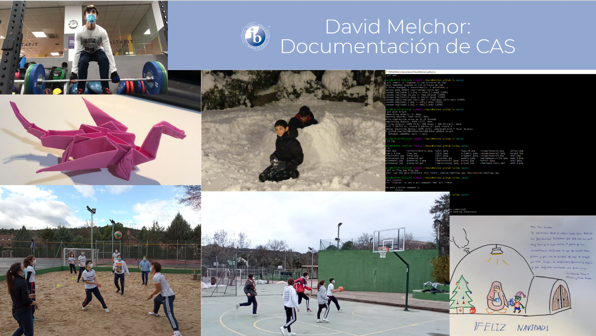
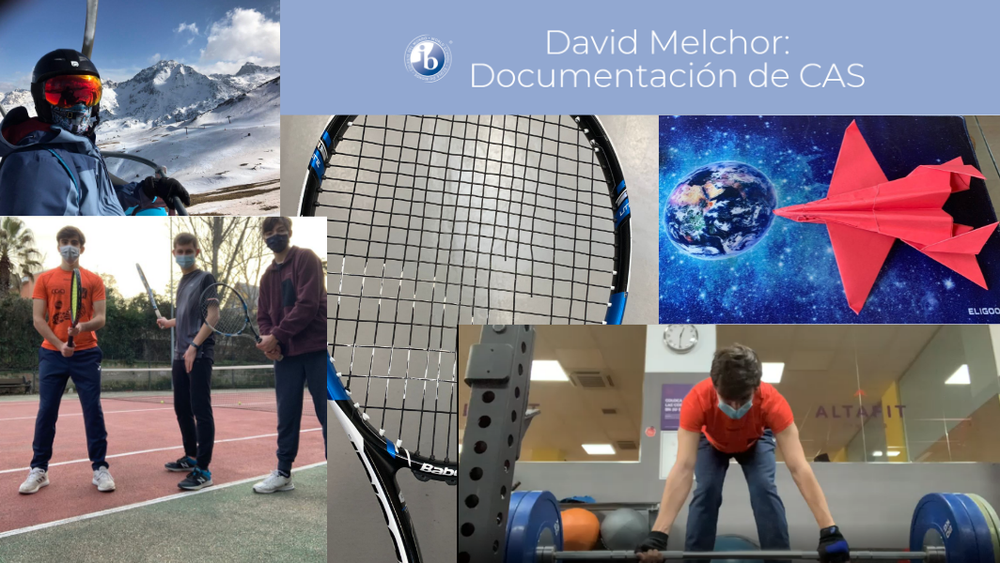
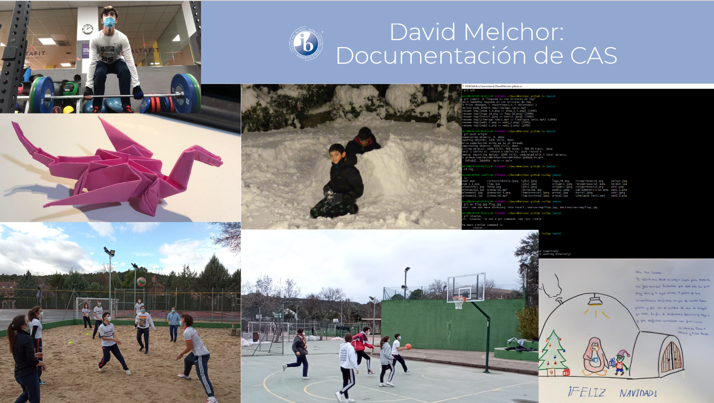
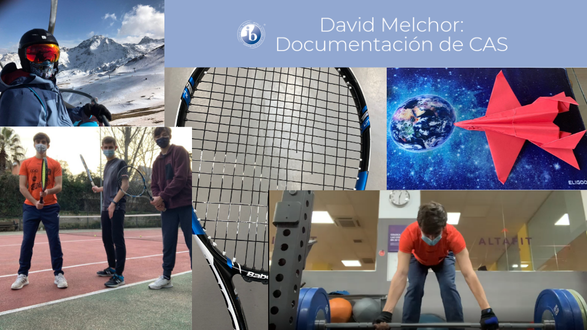
A mi hermano mayor siempre le ha apasionado todo lo relacionado con los ordenadores y la robótica, hace unos 4
años empezó a aprender aprogramar y claro, como todo hermano pequeño, yo también quería hacer lo que él hiciese, así que empecé a pedirle
ayuda y aprendí programación básica en los lenguajes de programación CSS y HTML, pero me cansé al poco tiempo.
Entonces cuando nos dijeron a principio de este curso que teníamos que crear un blog, pensé que sería muy buena idea programar una página
web, para la documentación de CAS, ya que aparte de ser una actividad entretenida, es interesante que pueda crearla a mi gusto y no tener
que basarme en una plantilla ya proporcionada.
Al principio estaba muy emocionado y dediqué 8 horas en las primeras dos semanas, pero por el colegio lo dejé un poco de lado, ahora lo
he vuelto a retomar y ya es como una rutina para mí, los domingos por la mañana me pongo a programar y añado cualquier detalle a la
página web. Además, tengo la ventaja de que puedo pedir ayuda a mi hermano para que me resuelva cualquier duda, pero principalmente uso
Codecademy.com, una página web que contiene varias guías educativas gratuitas de distintos lenguajes de programación.
No todo ha sido sencillo, no siempre encuentras la solución a tus problemas, por ello hay cursos y hasta en la universidad, hay clases de
resolución de problemas mediante la programación. Lo más complicado hasta ahora ha sido colocar imágenes en el espacio, al final logré
sacarlo pero simplemente ponerla centrada y como yo quería me llevó un par de horas.
Crear una página web es un proyecto que implica estar pensando constantemente ideas nuevas para añadir a este o detalles para hacerla más
agradable,lo que yo hago es cada vez que se me ocurre una idea me la apunto, suelo tener la mayoría de ideas en el autobús yendo al
colegio. Mi teoría es queestoy “fresco”, ya que me acabo de levantar y aún no estoy cansado mentalmente ya que no he tenido clase aún.
A principios de 2020 empecé a hacer ejercicio en casa, salía mucho a correr, me compré una barra para hacer dominadas
en casa y empecé a ver vídeos para hacer ejercicio sin necesitar equipamiento. Solo lo hacía porque me sobraba tiempo libre y notaba avances,
sobretodo que al jugar al tenis, podía aguantar más y darle con más fuerza.
Llegó la cuarentena y como tenía mucho más tiempo libre, empecé a tomármelo más en serio, empezaron a interesarme los vídeos sobre ejercicio,
de cómo tenerbuena forma a la hora de hacer ejercicios, de nuevos ejercicios que no conocía, y algunos más científicos principalmente sobre
optimizar el crecimiento de los músculos, con esto me refiero a cada cuanto tiempo se deben trabajar o cuanto tiempo se debe descansar entre
series.
Cuando cumplí 16, justo antes de empezar este curso, me apunté al gimnasio y empecé a ir como 6-7h por semana, ahora 5-6 horas porque hay más
trabajo que hacer, y creé una tabla de ejercicios para mi rutina a la hora de ir al gimnasio:
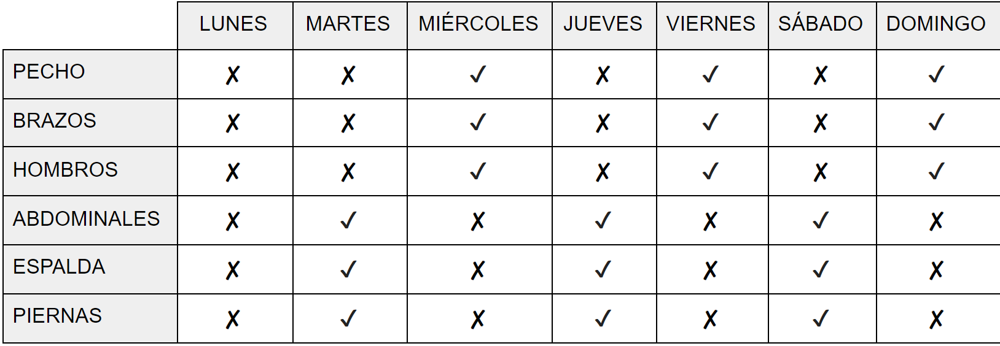
Esta sería la plantilla que he estado utilizando, suele haber dos generales, yo pensé que esta sería mejor ya que se dividen los días por zonas
que trabajas, es decir, al hacer pecho sueles hacer tríceps, por ello los pongo el mismo día. El día de descanso suele variar dependiendo del
trabajo que tenga que hacer por la tarde. Dentro de cada grupo muscular he ido cambiando los ejercicios al cabo del tiempo para elegir los mejores
para mí, ya que cada persona es diferente. Además, otro factor importante es que los músculos deben descansar 48 horas aproximadamente, por eso
los trabajo cada 2 días.
Crear la tabla fue una tarea bastante sencilla ya que llevaba desde el principio el verano deseando poder ir al gimnasio, en cambio ser constante
e ir al gimnasio tantas horas a la semana ha sido bastante complicado. La mayoría de la gente que ha probado el gimnasio acaba dejándolo,
sobretodo si tienes un trabajo o estudios que te lleven mucho tiempo. Pero yo disfruto yendo al gimnasio así que me esfuerzo por ser constante
y mantener mi afición. Hay épocas en las que estoy más motivado y otras en las que menos, sobretodo porque hay muchos obstáculos que te frenan,
si quiero ir al gimnasio entre semana después de hacer los deberes y estudiar prácticamente no tengo más tiempo libre. Otro obstáculo es que hay
días muy fríos o lluviosos en los que no tienes ganas de ir al gimnasio, ya que hacer ejercicio significa ponerte en una situación en la que tienes
que ganar al esfuerzo y al dolor, lo cual no siempre apetece.
Aunque la actividad de gimnasio forma parte de la sección de actividad, la actividad ya ha sido descrita en la reflexión de Crear mis propias tablas de ejercicios (y gimnasio).
El viernes pasado durante las horas de CAS jugamos al flag las dos clases del IB, el flag es un deporte parecido al
fútbol americano. Se juega en equipos, se podría decir que se divide el juego en dos fases que van alternando entre un equipo y otro, al
igual que el baseball en el que unos batean y otros defienden, en el flag unos atacan y otros defienden. El objetivo de los atacantes es
llegar al otro lado del campo, el de los defensores es impedirlo. El juego comienza cuando el center, un jugador del equipo atacante le
pasa el balón (de fútbol americano) al quarterback, un jugador atacante que pasará el balón a uno de sus compañeros y este correrá, pero
tiene más movimientos más avanzados como pasar el balón a uno detrás del área se saque y que este sea el que corra o pase a un compañero
el balón. Cuando un jugador atrapa el balón, tiene que correr hasta llegar al final del campo, no puede pasar. Hay tres intentos para
conseguirlo, si no se consigue se cambia, finalmente se puede impedir de 3 maneras: que los atacantes marquen quitándoles una de las dos
telas que llevan en la cadera, que intercepten el balón y que toque el suelo.
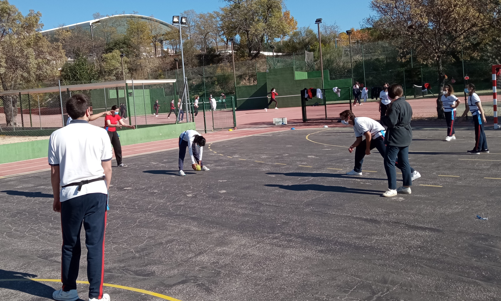
Flag siempre ha sido uno de mis deportes preferidos, a veces pienso apuntarme a algún club fuera del colegio, pero nunca lo hago, ya que
no tengo tanto tiempo y no es una preferencia. Esta clase fue bastante entretenida, aunque no ganamos todos los partidos, yo creo que
habríamos ganado todos, aunque una persona de nuestro equipo se lesionó. Además, que estuviesen juntas las dos clases lo hizo más divertido,
ya que así descubrimos cosas sobre los de otras clases, como si les gusta el deporte o cómo actúan después de ganar, si lo viven o no, etc.
Al empezar este curso decidí que para poder ir al gimnasio tantas horas como quería a la semana, para tener tiempo suficiente
para hacer los deberes y para tener un mínimo de tiempo libre, tenía que dejar las clases de tenis. Entonces, Víctor Baeza y yo acordamos jugar
al tenis un par de veces por trimestre, así no perdíamos nuestras habilidades y además de ser también una actividad divertida, ya que estamos muy
igualados.
El sábado 31 de octubre y el domingo 8 de noviembre jugamos los dos partidos. Lo malo de que sea otoño es que anochece muy pronto, por tanto
hace bastante frío y jugar al tenis con las manos frías no es lo más preferible. Aprovechamos también el domingo para jugar al pádel con más
amigos, el único inconveniente es que no tuvimos la opción de encender los focos y jugamos con muy poca luz.

Mi objetivo era recordar cómo jugar otra vez, sobretodo mejorar mi derecha y cortada de derecha. Me sorprendió que no había perdido mi golpe
por completo, de hecho jugué bastante bien. Durante el primer partido jugamos peor que cuando teníamos clases de tenis, pero no tanto como
esperábamos, mis saques de hecho fueron casi mejores que antes. Acabamos empatando, 5-5, y no pudimos terminarlo porque se nos acabó el tiempo
de reserva de la pista.

El segundo día acabó ganando Víctor, pero estuvo bastante reñido. El hecho de que estemos tan igualados hace la actividad más entretenida y
competitiva, por ello estamos de acuerdo en que queremos repetirlo en un futuro próximo.
Hace dos meses pensé que sería buena idea organizar una recogida de basura por Molino de la Hoz, así que el
viernes pasado pensé que sería el día adecuado, ya que salimos pronto y podíamos pasarnos esa hora después del colegio recogiendo basura.
Le pregunté a dos personas si se querían apuntar y dijeron que sí, entonces llegaron 5 personas más diciendo que les gustaba mi idea y que
les gustaría unirse, decidimos que la mejor opción era separarnos en dos grupos para cubrir más terreno y así ser menos de 7, ya que el
máximo número de personas que actualmente se pueden reunir es 6. Mi grupo realizó el siguiente trayecto:
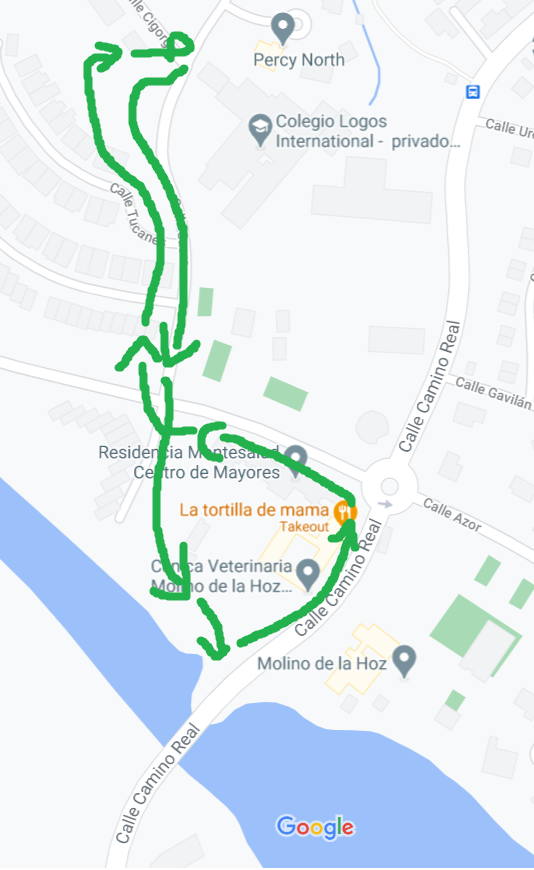
Durante este trayecto paramos en un descampado al lado de la puerta del colegio de arriba, por esta zona no encontramos tanta basura,
pero la que encontramos era grande, como el bidón de la siguiente foto:
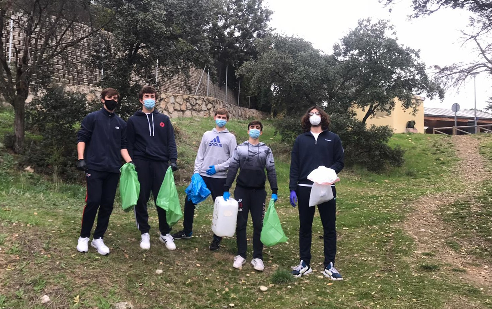
Al cabo del tiempo llegamos a un descampado abierto cerca del lago en el que encontramos mucha basura, llegamos aproximadamente a
recoger por esta zona 10 cajas de cigarrillos, más de 15 latas y muchísimas bolsas de plástico.
Lo mejor es que no fue aburrido ni nos sentíamos obligados a hacerlo, simplemente conseguí organizarlo para que nos encajase a
todos y por ejemplo, a mí y a alguno más nos venía hasta bien ya que íbamos a esperar a la ruta, solo aprovechamos el tiempo. También
ayudó que nos lo tomamos como una competición y así íbamos más rapìdo y participábamos todos. Esta tarea nos pareció necesaria para la
comunidad, ya que encontramos demasiada basura, y pensamos repetirla al cabo de este año varias veces.
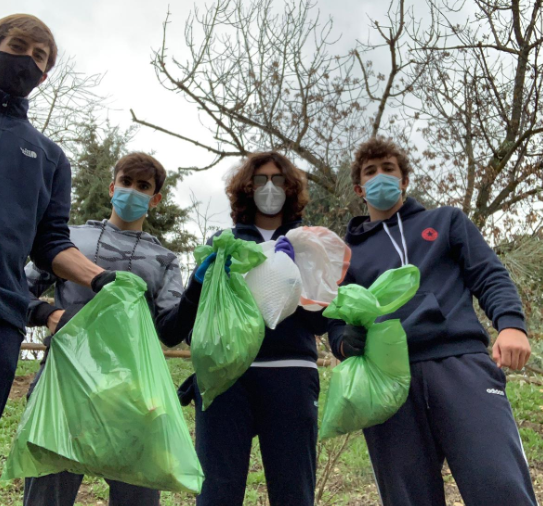
Ayer, domingo 7 de febrero de 2021, fui a comprar unas cartulinas para hacer algunos origamis. Lo hice ya que al ver los de
Álvaro Riva, me gustó la idea y me propuse hacer uno muy difícil. Busqué en YouTube un vídeo y me interesó mucho ver el proceso de creación, me
recordó por lo difícil que era pensar uno, al cubo de Rubik, sigo sin saber cómo a una persona se le puede ocurrir cómo crear un origami.
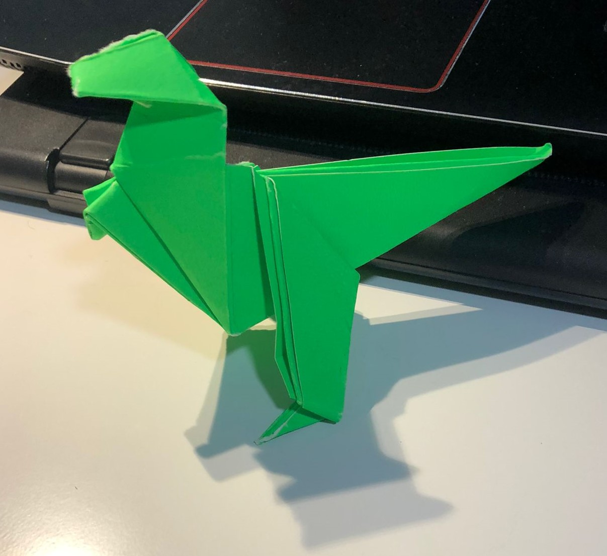
Primero empecé con uno no muy complicado, un dinosaurio, creo que un T-rex. Nada más empezarlo ya me di cuenta de que había un problema, había
elegido unas cartulinas extremadamente gruesas, y por ello, me costaba mucho doblarla y seguir el paso del vídeo, pero me aguanté, ya que no iba
a tirar las cartulinas. El primero no me salió muy bien, rompí un trocito de cartulina, pero tuve suerte y no afectó más tarde ya que esa doblez
acaba escondida. Además, por ser una cartulina tan gruesa, el dinosaurio se abría de piernas.
Después del primero, el cual me llevó unos 30 minutos, aunque el vídeo era de 8, me sentía confiado y elegí uno más chulo y mucho más complejo y
largo. Este origami me llevó 45 minutos y el vídeo era de 20, por tanto se podría decir que seguía mejor el vídeo. Elegí este dragón:
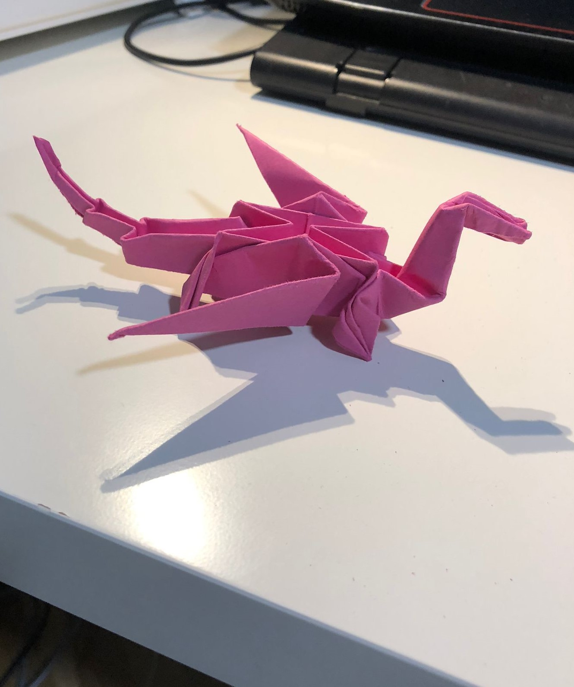
Este me costó bastante más ya que tenía un par de movimientos muy complicados, tenía que volver atrás en el vídeo 10 segundos varias veces, para
enterarme bien. Pero al final logré hacer todo bastante bien, menos la cabeza porque al doblar el papel tantas veces los errores se suman y al
final se notó bastante.
Finalmente, me gustó hacer esta actividad ya que normalmente no me gusta hacer nada de “manualidades” pero si esto se considera una, me ha gustado
mucho. También como he mencionado anteriormente, me ha sorprendido mucho que a una persona se le pueda ocurrir hacer algo de ese nivel de creatividad
y dificultad.
A mi hermano mayor
Desde que comenzó esta evaluación he ido programando poco a poco, me he centrado principalmente en añadir el contenido de la segunda evaluación,
las reflexiones), pero también he ido ajustando errores y mejorando el diseño de la página. Tuve que cambiarla completamente ya que cuando empecé
a programar no estaba viéndolo desde una perspectiva futura.
El cambio más destacable es que he añadido una sección en la página, en la que puedes elegir si quieres ir al inicio de esta, o ir al primero o
segundo año de CAS, lo cual ha cambiado por completo la estructura de la página, he tenido que rehacer gran parte. También he mejorado los
índices indicando todas las actividades de cada evaluación. Ha habido muchos cambios estéticos, principalmente los colores y temas de la página,
ahora es mucho más bonita y agradable. Cambios menores han sido: la separación entre líneas, la separación entre textos, y el tamaño de la letra
mayor hace que se pueda leer mucho mejor.
Lo más importante que he hecho durante esta evaluación es publicar mi página web, antes solo la podía ver yo, pero ahora responde a
http://davidmelchor.github.io/ y también a https://davidmelchor.com/. Lo he hecho usando git, un software útil ya que a parte de ayudarte
a subir tu página web al público, guarda versiones anteriores de tu página y en cualquier momento puedes volver atrás. También he aprendido a
usar git-bash, una especie de consola de comandos, en la que introduces una serie de comandos para realizar acciones más fácilmente que relacionan
tus archivos en tu ordenador y lo que ve la gente cuando busca tu página web, es así:
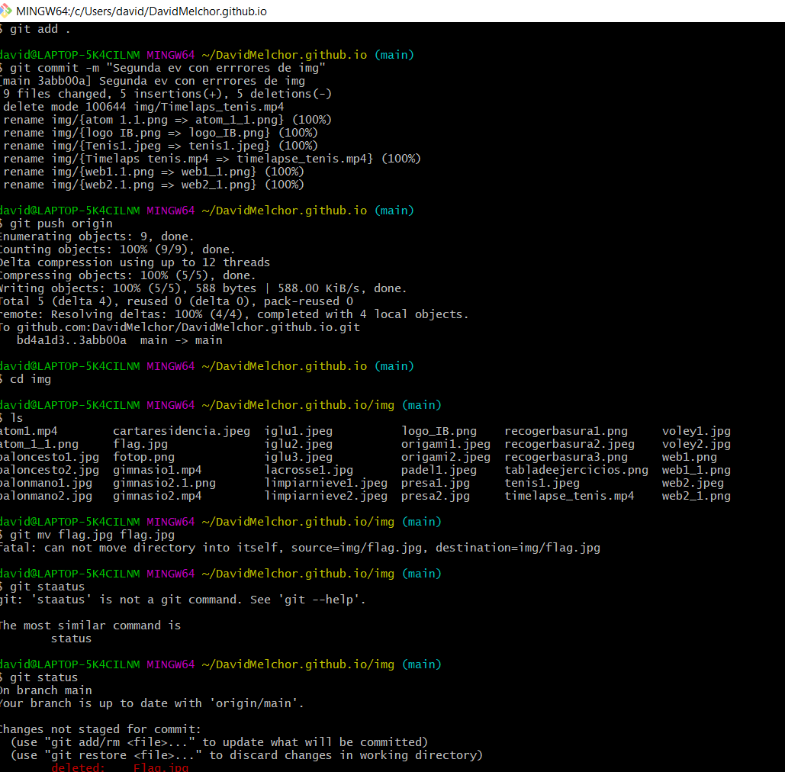
Al publicarla, me he dado cuenta de muchos errores que tenía y que sigue teniendo, por ejemplo, al publicarla no puedes llamar al mismo elemento de
dos maneras, una con mayúsculas y otra con minúsculas, tienen que llamarse exactamente igual, sino no funciona. También los enlaces se veían
extraños. Otro error que voy a arreglar durante la tercera evaluación es que no se ve igual en movil, mi ordenador o una tableta, tengo que
arreglar las proporciones, por ejemplo, ahora mismo se ve así en un móvil:
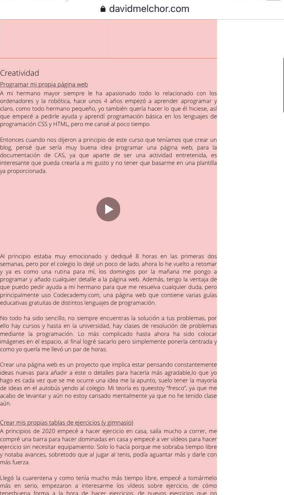
Finalmente, he aprendido bastante de no solo programación como de estética, gracias a mi hermano y mi padre, las personas que me han ayudado,
he solucionado muchos problemas con ellos y he arreglado el aspecto visual de la página. También a veces lo hago yo solo buscando en internet,
pero ellos me ayudan siempre que pueden. Así era antes comparado con ahora:
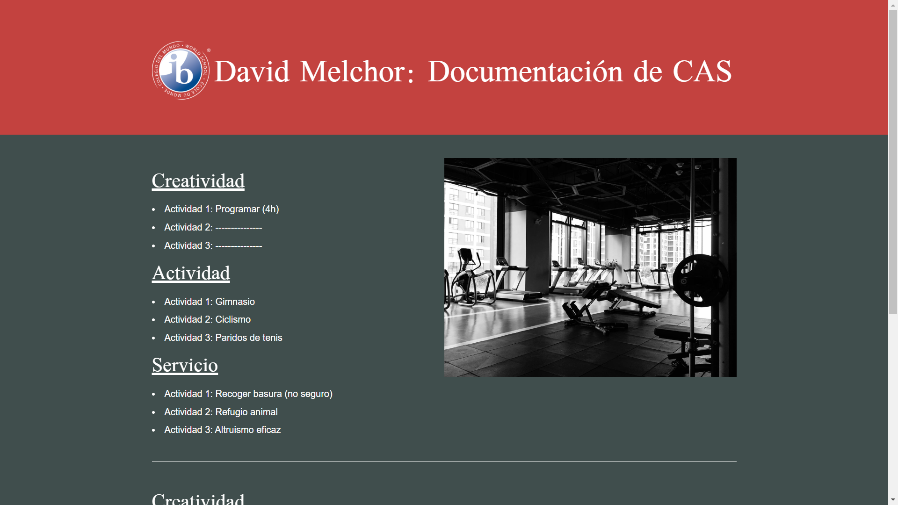
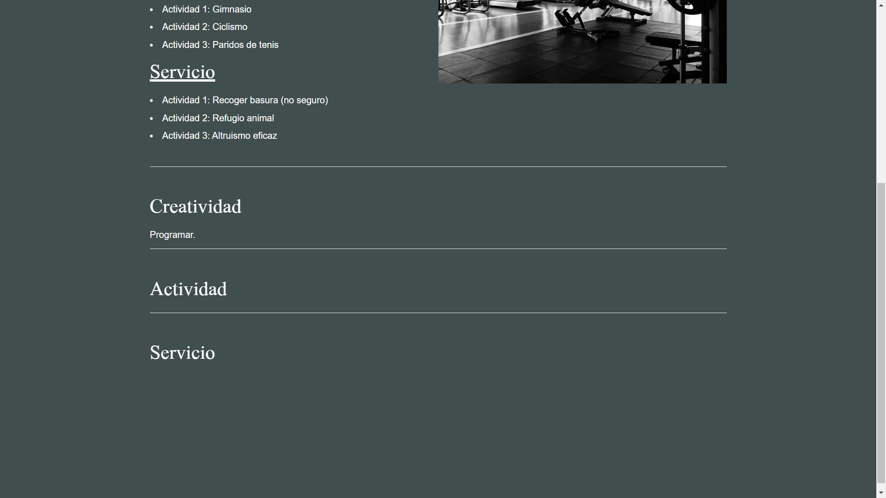
El día de la nevada por la mañana, cuando me enteré de que había nevado tanto, instantáneamente se me ocurrió construir un
muñeco de nieve con mi hermano. A lo largo del día tenía pensado hacerlo, pero no paraba de nevar. Entonces por fin, a las 5 de la tarde dejó de
nevar, mi hermano y yo estábamos dispuestos a salir por mucho frío que hiciese, por ello, nos preparamos con guantes, gorro, varios pantalones puestos
a la vez y botas. Al salir afuera tuve la “gran ocurrencia” (irónicamente) de construir un iglú en el que al menos yo cupiese.
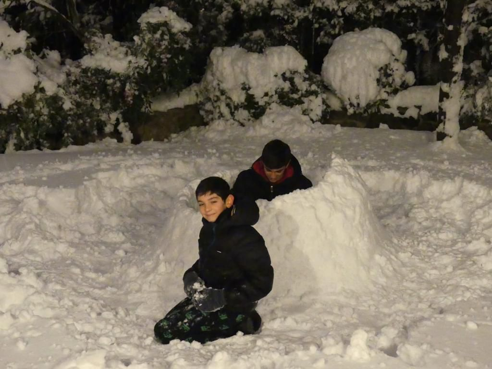
Había tanta nieve que era difícil delimitar dónde queríamos construirlo, al final lo decidimos construir en medio de nuestro jardín. Empezamos haciendo
un gran agujero y construyendo una especie de muralla, vista desde arriba como un círculo, pero le faltaba un trozo, la entrada al iglú.
Luego durante 2h y media seguimos construyendo la altura hasta que basicamente mi madre me dijo que entrase porque iba a acabar enfermo por el frío.
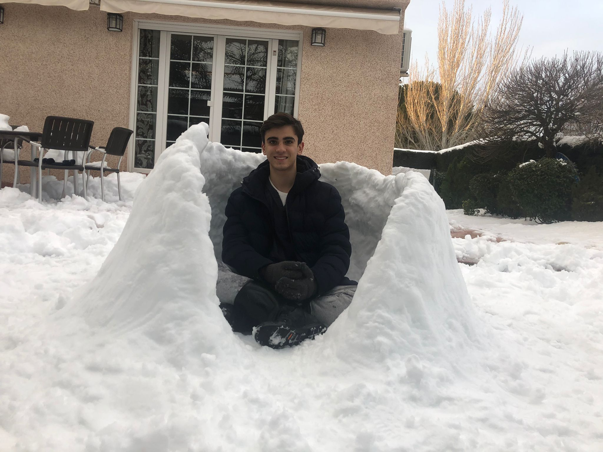
Al día siguiente continuamos, pero por la humedad de la noche, el iglú se había debilitado mucho, y ocurrieron muchos incidentes. No paraba de romperse
y era muy complicado avanzar, ese día construimos muy poco. Pero al día siguiente volvimos con fuerzas dispuestos a construir el techo del iglú, la parte
más delicada y complicada. Empezamos con la curva, pero no pudimos terminarlo ya que empezó a nevar, al volver más tarde vimos que se había debilitado
mucho, y que ya era imposible hacerlo a no ser que empezáramos a reforzar de nuevo desde la base.
Al final dedicamos unas 4 horas entre 3 días. Han pasado ya 2 semanas y aunque ha habido lluvias y viento fuerte, nuestro iglú ha aguantado, y es lo
último que queda de nieve prácticamente en nuestro jardín.
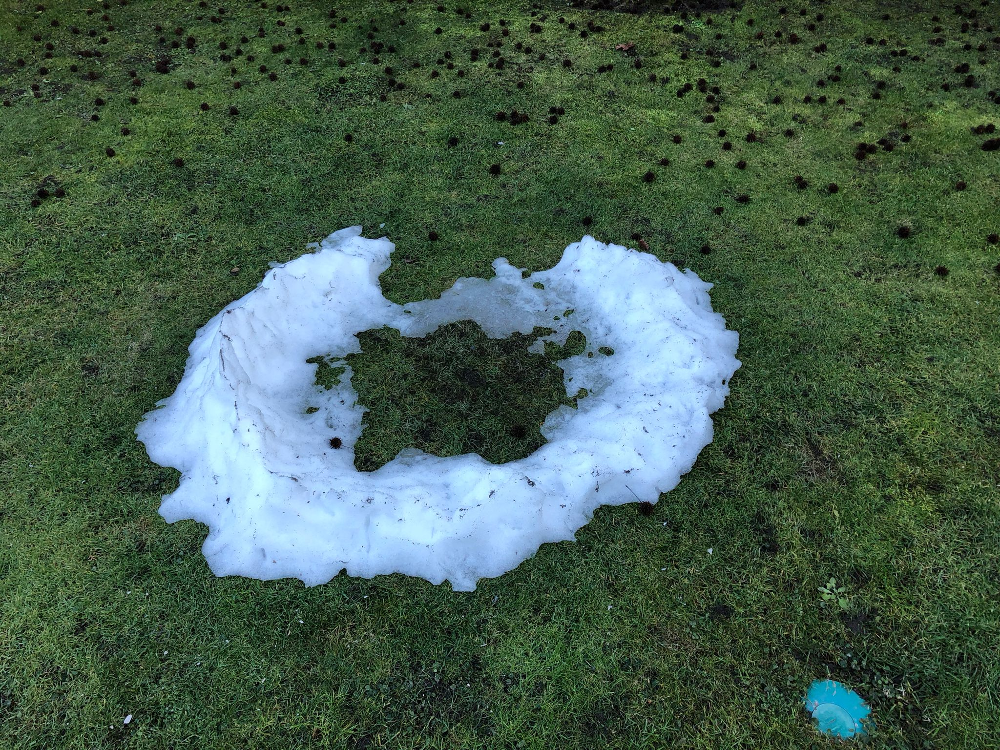
Desde la primera evaluación he adaptado las tablas de ejercicios dadas las complicaciones de este, como la nieve y que
durante la Navidad no he podido ir tanto como me habría gustado. Además, este trimestre se ha vuelto más complicado el colegio, por tanto no he podido
ir tanto al gimnasio.
Principalmente lo que he ajustado esta evaluación ha sido la flexibilidad de estas, por ejemplo, he cambiado el plan de ir 6-5 veces a la semana a uno
que no depende de los días de la semana, sino que solo tiene un orden. También me he centrado en optimizar al máximo el tiempo que voy, por tanto hago
más ejercicios compuestos y menos específicos.
Pero siempre he mantenido una serie de criterios, por ejemplo siempre que voy, estoy mínimo 50 minutos y mínimo por semana voy 4 veces. En esta tabla,
aproximadamente muestro mi plan:
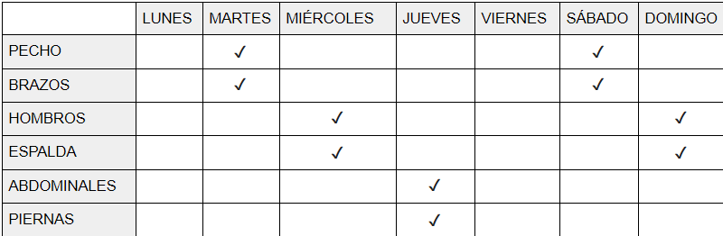
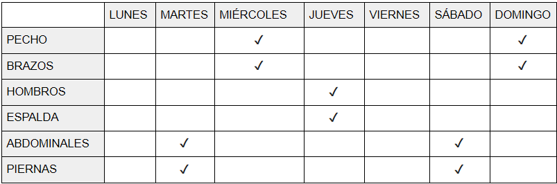
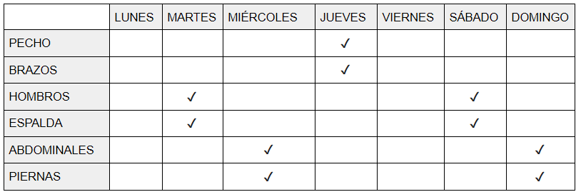
Nunca he sido de las personas que se apuntan su tabla y la siguen a la perfección ya que siempre hay algo que falla, como por ejemplo que la máquina
esté siendo usada por otra persona. Por ello, me he creado un plan que es doble, con esto quiero decir que si hay algún problema puedo seguir otro
camino. Por ejemplo, para los días que hago piernas, tengo dos rutinas y dependiendo de cómo me sienta y la cantidad de gente que haya, elijo uno u otro.
Finalmente, como conclusión, se podría decir que esta evaluación me he convertido en alguien más flexible lo cual es bueno pero también suele convertirte
en alguien más perezoso, lo cual intento evitar lo máximo que pueda.
Durante el segundo trimestre, he continuado yendo al gimnasio. Ha habido bastantes complicaciones comparado con el primer
trimestre, este trimestre se ha vuelto más complicado el colegio, por tanto al tener más deberes no he podido ir tanto al gimnasio, lo cual no ha
sido malo del todo.
Que la dificultad de los estudios incrementase ha hecho que me volviese más flexible a la hora de cumplir el horario del gimnasio, antes me
fastidiaba mucho no poder ir siempre, ahora lo acepto y me adapto de una manera o de otra. También he recopilado el doble de experiencia y
así puedo optimizar mejor el tiempo que uso para entrenar.
Otro problema ha sido la nevada y la navidad en general. La Navidad ha hecho que por los días festivos, el gimnasio estuviera cerrado y también
por la nevada no pude ir al gimnasio en una semana. Al volver volvió a encantarme el gimnasio y ese descanso en el fondo fue bueno mentalmente.
Sigo mejorando en los desafíos que me propongo como hacer 12 dominadas durante 4 series, pero ese desafío creo que me va a llevar mucho tiempo
ya que, aunque es mi objetivo principal, se avanza muy despacio. Otro desafío que veo más viable a largo plazo es que en la tercera evaluación
llegue a 75 de press de banca. También estoy muy orgulloso de mí mismo porque he incrementado mucho mi peso muerto, un ejercicio compuesto
muy efectivo, empecé esta evaluación con unos 60 kg aproximadamente y ahora mismo, a día de hoy puedo hacerlo con 80 kg y 6 series de 8
repeticiones, además de conseguir por fin la técnica perfecta, algo que aún tengo que conseguir con las sentadillas. Se podría decir que mi
objetivo final es vencer la pereza y hacer ejercicio cardiovascular (cardio), el cual es el tipo de ejercicio que más odio.
Esta semana la actividad realizada ha sido el Balonmano, el cual en un deporte de equipos, el cual se juega con una pelota de un tamaño medio,
más o menos la mitad que una pelota de fútbol. El balonmano se parece mucho al fútbol, las diferencias principales entre los dos son que se juega
con las manos en vez de los pies y también una regla importante es que el área que rodea a cada portero no se puede atravesar. Otra diferencia es
que si el balón pasa la línea de portería el balón es siempre para el portero. Finalmente los equipos son de 7 personas.
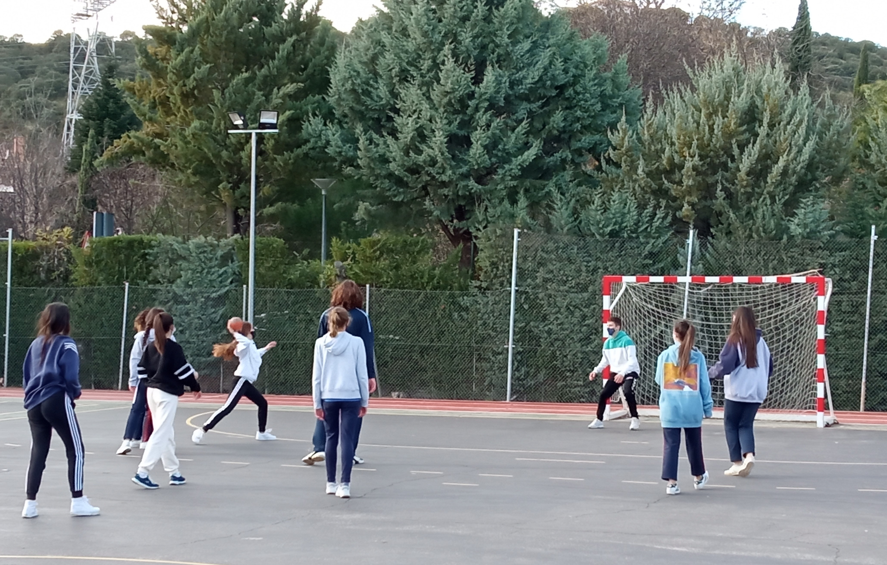
El balonmano también es un deporte que me gusta mucho, ya que soy muy torpe a la hora de usar los pies, pero se me da bien correr y botar. Además,
no es como en el baloncesto que me cuesta mucho encestar, sino que la portería es bastante amplia y el lanzamiento es más sencillo.
No recuerdo muy bien quién estaba en mi equipo, sí que recuerdo que hasta ahora ha sido uno de los mejores días ya que todo el mundo participaba,
y recuerdo que no estaba desnivelado ningún equipo. Finalmente creo recordar que mi equipo llamado: “David, Mireya and company” quedó primero.
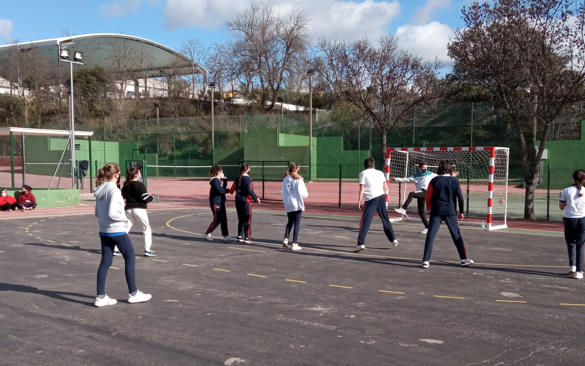
El viernes pasado en clase de CAS, nuestra clase jugó al voleibol de playa, en esencia es lo mismo que el voleibol pero en arena. Por tanto,
jugamos en la pista de arena y nos dividimos en 4 equipos de 5 personas cada uno. Mi equipo estaba formado por: Claudia Jiménez, Juan Álvarez,
Patricia Sánchez, Candela Pedredo y finalmente, por mí.

Recuerdo que nuestro equipo no era malo, perdimos 2 partidos y ganamos uno, además recuerdo que como nos lo estábamos pasando bien, yo,
“inteligentemente”, decidí sacar por arriba cuando ibamos 15-14 ganando, y fallé, por ello acabamos perdiendo pero fue divertido al final.

El viernes pasado durante las horas de CAS, las dos clases del IB realizamos una ruta por la montaña de detrás del colegio,
que pasaba por la Presa de El Gasco, y luego continuaba hasta prácticamente la cima de esta pequeña montaña.

Primero nos reunimos todos en el patio de los niños pequeños, en el campo de baloncesto del fondo. Desde ahí comenzamos a andar y aproximadamente
a los 10-15 minutos llegamos a ver la presa. Luego decidimos parar uno o dos minutos y a partir de ese momento, las quejas empezaron. Se oía cada
dos por tres a alguna persona diciendo: ¿Cuánto nos queda?, y gente diciendo que ya estaba muerta y que iba a bajar rodando.
Tardamos unos 15 minutos en llegar al punto más alto, 820 metros, desde arriba creo que todos nosotros intentamos identificar donde estaban
varios lugares de Las Rozas, como el colegio de pequeños o el Heron City, lo cual yo considero que fue lo más interesante de todo, ya que nunca
antes había visto Las Rozas así, y en el fondo es divertido ubicarte en tu cabeza.
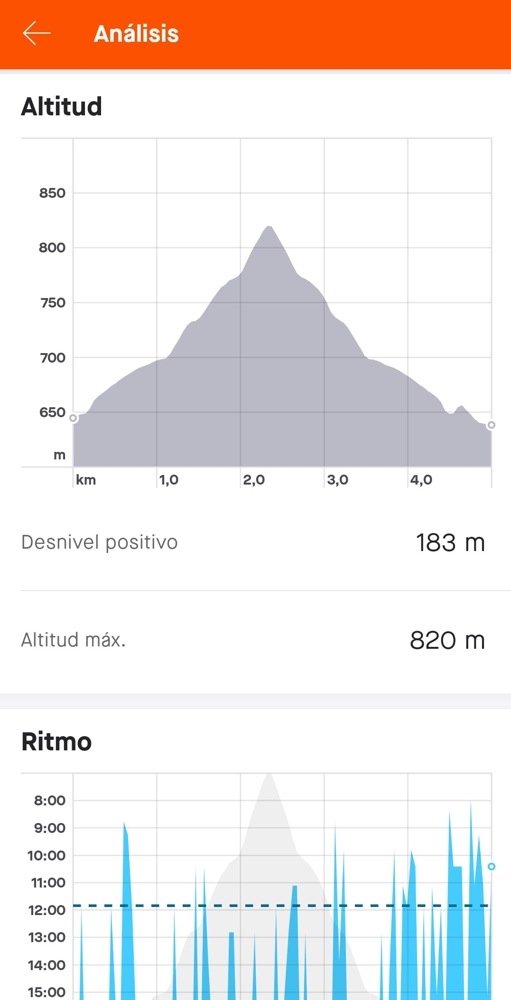
La bajada se pasó bastante rápido porque estuve hablando con amigos, y yo creo que tardamos menos que en la subida, y recorrimos unos 5 km en
1 hora. Finalmente considero que es una buena actividad de CAS ya que a parte de hacer actividad física, nos informamos de lo que está a nuestro
alrededor. Llevo más de 10 años en este colegio, y nunca antes había pasado por ahí.
El viernes pasado en clase de CAS jugamos al baloncesto, un deporte bastante popular de equipos compuestos por 5 personas.
El objetivo es encestar un balón, más bien duro a través de un aro que está a unos 3 metros de altura. Se juega con las manos, haciendo pases
y botando el balón, para lograr acercarse a la canasta y encestar más fácilmente.
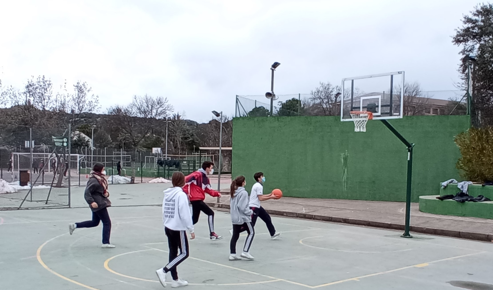
Para jugar nos dividimos en equipos, el mio estaba formado por Juan Álvarez, Alba Salgado, Hannah Jungbluth, María Casás y yo. Sinceramente
éramos los peores, aunque lo intentamos, no conseguíamos encestar ninguna, podíamos pasar perfectamente y correr, pero no podíamos competir
con otros que sí que sabían jugar al baloncesto. Encestamos unas 5 veces en 4 partidos, una vez fui yo, dos veces María y dos Juan.
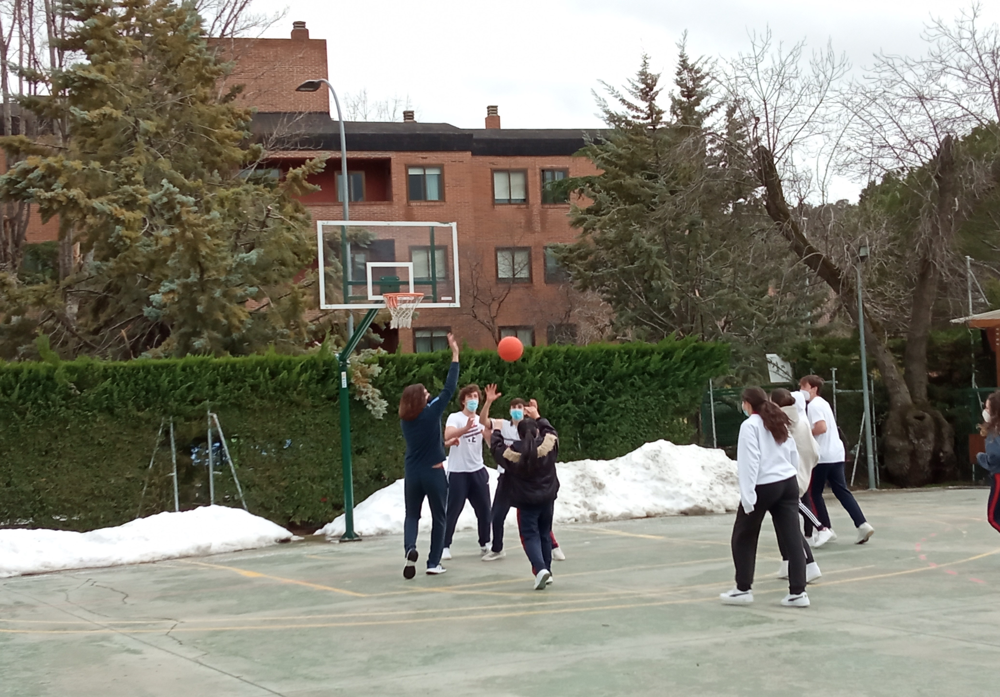
Finalmente, podría concluir en que el baloncesto cada vez me gusta más, yo me considero una persona razonablemente buena en todos los deportes,
y por ello creo que a medida que mejoro en uno, mejoro en todos. Creo que se me da bien correr y pasar, pero sé que mi punto débil ha sido siempre
el lanzamiento, si quiero encestar tengo que hacer los tres pasos perfectos, saltar, y ya cuando estoy extremadamente cerca de la canasta, ya
tiro y encesto.
Hace una semana, durante la hora de CAS, jugamos a un deporte nuevo, para mí, llamado lacrosse. Nunca antes lo había jugado,
solo sabía que existía, pero ni siquiera sabía las reglas. El lacrosse es un deporte de equipos de 10 personas en el que se usa un palo con una
red para pasar y recibir una pelota pequeña con el objetivo de meter goles en la pequeña portería del equipo enemigo. Finalmente, este deporte
es popular en Estados Unidos y Canadá.
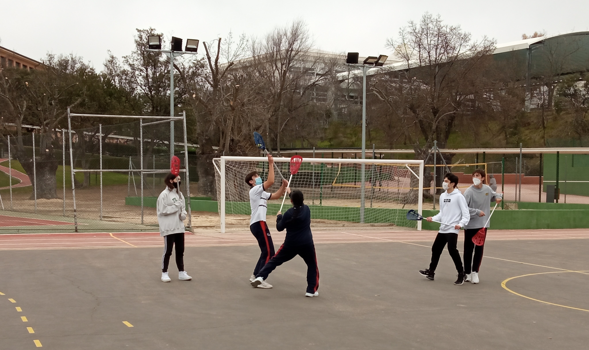
Mi equipo compuesto por solo 4 personas, comparado con el resto de equipos, estaba compuesto por: Juan Álvarez, Vega Donate, Bruno Beteta y por
mí. Yo jugaba de portero escoba para hacerlo más justo, pero aún así estaba muy desnivelado, recuerdo que no jugamos mal para ser la primera vez,
pero todos éramos muy torpes. Ganamos un partido contra el equipo de Diego Finkel, y perdimos los otros dos, pero yo me quedé agusto porque acabé
sudando y me paré bastantes tiros, de hecho recuerdo que me picaron algunos, con el muslo me paré una y dolió bastante.
Sinceramente el lacrosse es un deporte que no me gusta, soy muy torpe y además no me gusta como es el deporte en sí.
El sábado pasado, sábado 16 de enero, la actividad que realicé fue recoger nieve a lo largo de mi calle, dado
que había una cantidad razonable de nieve porque el quitanieves no pasó por mi calle. La nieve era mucha menos que al principio, pero yo veía que
el hielo llevaba ahí varios días y que parecía que no se iba a ir sin ayuda.
Lo hice este día y no antes, porque sinceramente no tenía pensado hacerlo, ya con hacer un iglú me bastaba, pero lo hice porque ese día por la
mañana, mi madre me obligó a salir a recoger nieve delante de nuestro garaje para poder sacar el coche el lunes (cosa que no se hizo al final).
Entonces cuando me iba a poner a recoger pensé que podía recoger parte de la nieve de enfrente de los vecinos de al lado, ancianos con los que
nunca he hablado, y el principio de la calle, ya que yo vivo en la primera casa, y beneficiaría a toda la comunidad en su conjunto.
Primero me dediqué a limpiar la puerta de mi garaje, para que se pudiera abrir, y en vez de echar nieve al lado, la aparté lejos así mientras,
optimizaba mi trabajo, ya que también iba a limpiar la parte de fuera de la casa de los vecinos. Dediqué unas dos horas ya que el hielo era
difícil de quitar con una mini pala que tengo, pero me ayudaron mis hermanos, al final pude quitar la mayoría de las placas de hielo para que
se pudieran abrir sus puertas de los garajes pero hubo algunas que dejé porque eran imposibles de quitar. (En esta foto se ven los dos caminos para las ruedas)
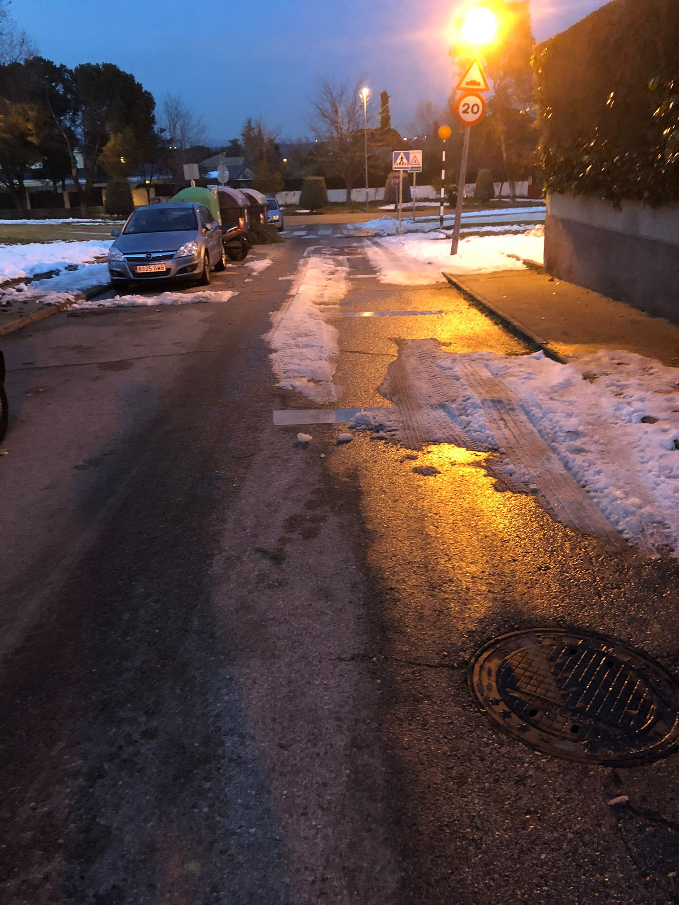
En vez de descansar, como sabía que si paraba no lo iba a hacer luego, fui directo a quitar el hielo del principio de la calle, el cual fue
más sencillo porque en esa zona había menos por alguna razón. Hice dos caminos para las ruedas y quité nieve del centro para que el coche por
debajo no rozase con el suelo, todo aun con ayuda de mi hermano mayor ya que mi hermano pequeño dijo que se había hecho daño y paró.
Finalmente, yo considero que mi trabajo no parece mucho, pero en el fondo dediqué 3 horas, en estas fotos muestro el resultado final de la calle:
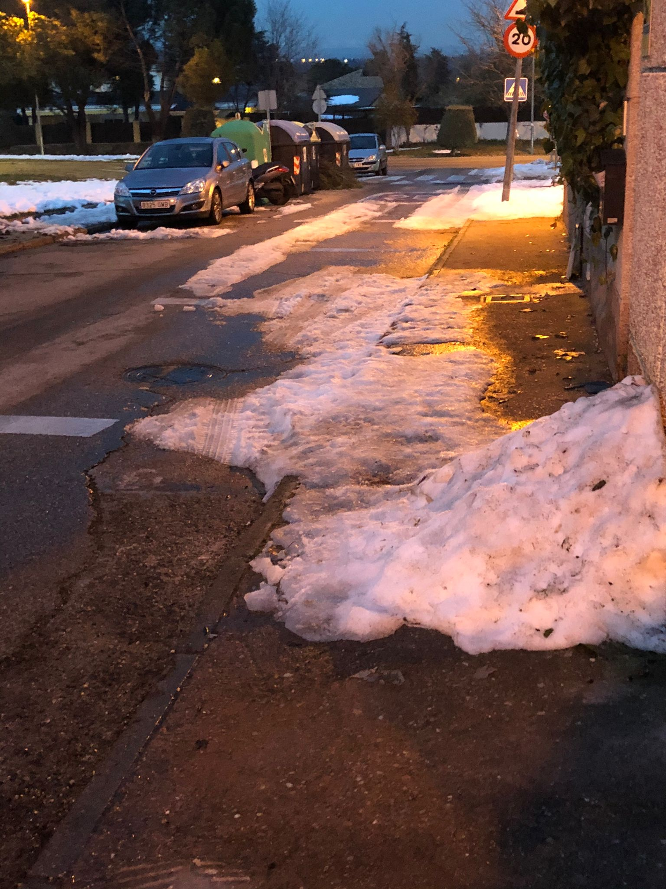
Antes de las vacaciones de Navidad, una alumna de segundo de bachillerato nos propuso escribir algunas cartas
felicitando la Navidad a los ancianos de la residencia de al lado del colegio, ya que este año por la pandemia no nos es posible ir a visitarlos.
Yo la hice con Víctor Baeza, nos dividimos el trabajo en dos partes para poder hacerlo por separado, él hizo el dibujo y yo redacté la carta.
Nosotros creamos la tarjeta de Navidad para Mari Carmen. Mientras que la redactada, pude apreciar la soledad de estas personas, me di cuenta de
que esto posiblemente podría subirles el ánimo un poco viendo que hay personas que sí que piensan en ellos. También pensé que seguramente algún
anciano no la apreciaría ya que pensaría que lo hacemos porque sí, que nunca lo hemos conocido, pero en el fondo espero que a todos les haya
gustado su tarjeta.
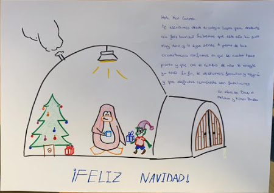
Probablemente para escribir estas 100 palabras dediqué unas dos horas ya que no quería que sonase mal y que de verdad lo apreciara Mari Carmen.
También lo escribí dos veces a lápiz antes de cambiarlo a bolígrafo ya que no me cabía en ese espacio reducido y quería hacerlo bien.
A lo largo de este curso, a Álvaro Riva y a mí, se nos ocurrió hacer unos origamis, ya que nos pareció una actividad interesante y divertida, ya
que siempre veíamos a gente hacerlos, pero nunca lo hicimos nosotros mismos. Un día decidimos que teníamos que organizar algún plan para hacer un
origami gigante, entonces, este sábado fue ese día.
Primero fui a comprar cartulinas A2, es decir, 4 cartulinas normales juntas. Luego fui a casa de Álvaro y decidimos qué origamis hacer. Elegimos
un avión y una tortuga.
Empezamos con el avión e inmediatamente nos dimos cuenta de un gran problema, la cartulina era demasiado grande y gruesa, y por tanto no se podía
doblar fácilmente. Pese a este problema seguimos trabajando, ayudándonos de un vídeo de Youtube. Llegamos a un punto en el que era tan difícil
doblarlo que nos salió mal esa parte, la parte frontal del avión.
Pero no queríamos dejarlo como estaba así que continuamos con ese pequeño problema. Así nos quedó al final:
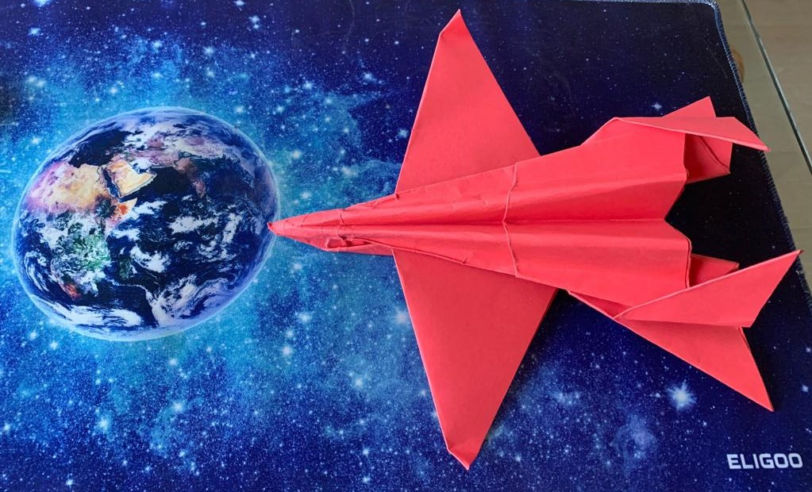
Como segundo origami decidimos hacer una tortuga, principalmente porque nos parecía más sencilla. Pero también encontramos el mismo problema,
este nos salió mucho mejor:
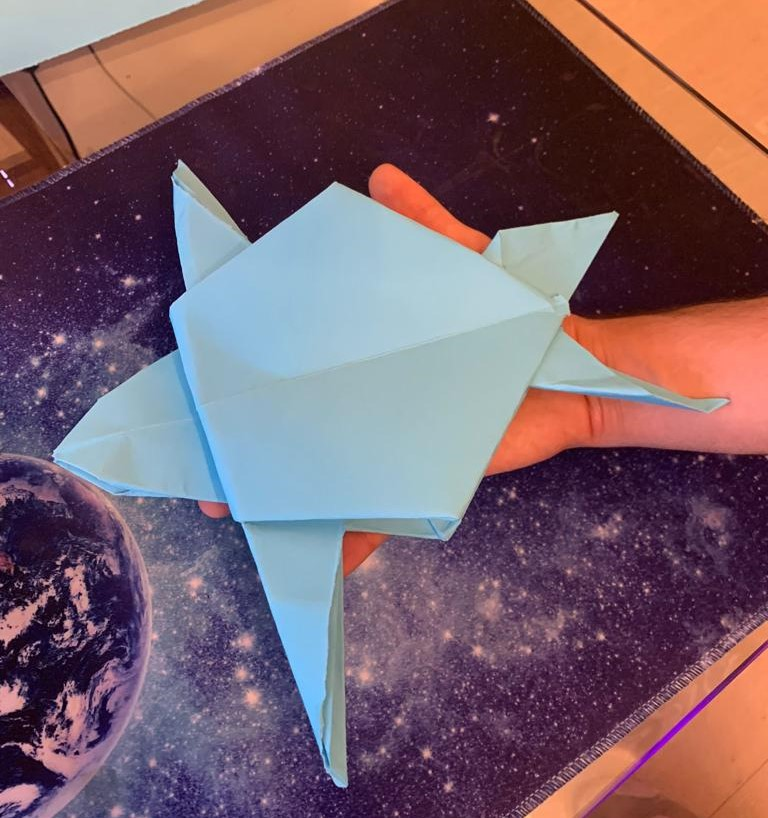
Finalmente yo creo que este mini proyecto ha sido interesantes porque hemos hecho “manualidades” que no suele ser algo divertido para mí pero lo
fue. También he podido aprender cual es mi nivel actual y por ello puedo mejorar y cada vez hacer unos más y más complejos.
Esta evaluación he decidido retomar el club de matemáticas que mi hermano empezó el año pasado. He decidido darle un enfoque distinto, el club
de matemáticas se va a dividir en dos periodos o fases, estas van a ser las siguientes:
Primero voy a dedicarme a explicarle a los alumnos de 4º de la ESO cómo es el IB, pero centrándome en las matemáticas. Voy a primero introducirles
las principales diferencias entre las suyas y las del IB, voy también a hacerles un breve resumen de cómo es el curso entero y finalmente les
presentaré ciertos problemas a ver si logran resolverlos, así a su vez enseñándoles la mentalidad IB.
Más tarde a lo largo del segundo año me voy a dedicar a mantener el club enfocándome en el estudio de campos interesantes de las matemáticas y
la física que no se expliquen en clase.
Voy a intentar organizar la primera reunión para la semana que viene, es decir, antes de los exámenes de evaluación voy a intentar haber tenido 2
sesiones.
Esta evaluación he continuado creando y mejorando mi página web. No he dedicado tanto tiempo como el que dediqué la evaluación pasada, pero aún
así he retocado detalles internos que no se ven tanto.
Lo que he hecho esta evaluación es primero, aprender un poco más, haciendo cursos de programación en Codecademy.com. Y por ello, he dedicado mucho
tiempo en arreglar fallos de estructura, es decir, mejorar las cosas, escribirlas más ordenadamente y separar todo en más categorías así cuando
tenga más código encontraré todo sin problema, sin tener que pasarme buscando todo media hora.
También he añadido más enlaces y ahora mismo me estoy dedicando a mejorar como funciona la página, para que sea más fácil de usar para el
que la busque. Por ejemplo, ahora si buscas la página, te lleva a la home, donde he hecho una pequeña descripción de qué es CAS y de lo que
he hecho. Más tarde si pinchas en primer año te lleva a una página interminable, eso es lo que voy a cambiar, voy a cambiarla a 3 pequeñas
páginas, una para cada evaluación. Y así yo creo que lo hará todo más manejable.
Finalmente pretendo añadir animaciones, o desplegables para los menús, lo cual parece algo sencillo pero me llevará más de 3h probablemente.
Es más o menos ese código entero para solo el texto de: ¿Qué es CAS?
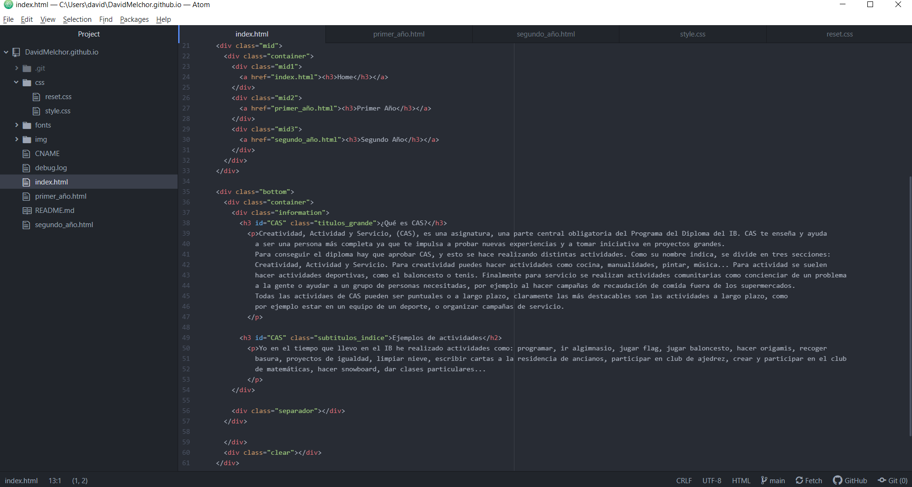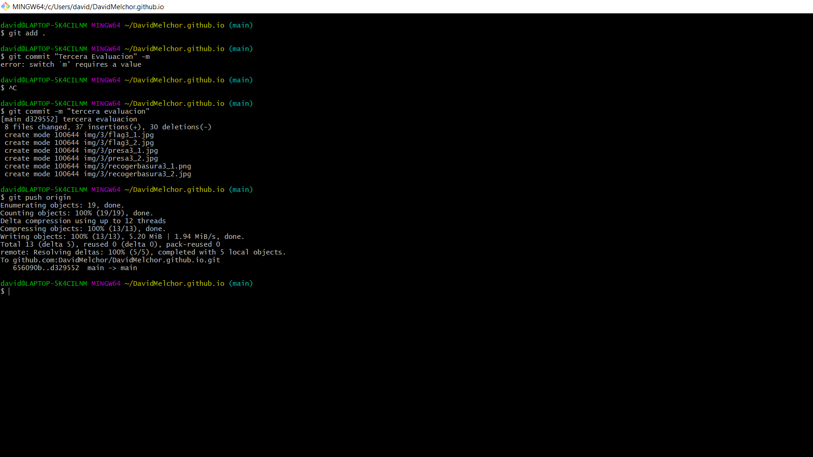
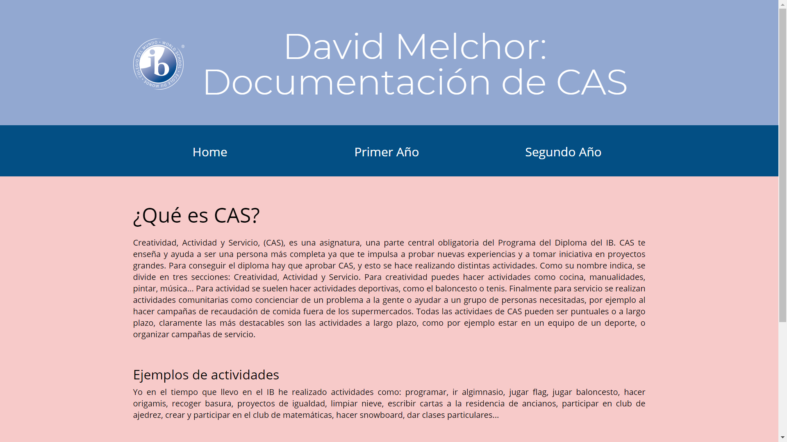
La evaluación pasada retomé el ajedrez, y esta lo he dejado de jugar. Al comienzo de este trimestre llegó el pico en el que más me gustó el ajedrez,
veía vídeos para aprender a jugar mejor, jugaba contra amigos para mejorar, bueno, en general estaba motivado.
Decidí ir un día al club de ajedrez para aprender más, ya que es con más gente es más entretenido. Entonces en vez de irme pronto ese día me quedé 2
horas más en el colegio. Ese día estuve con Víctor, Hans, Álvaro Cameo y también se pasaron un rato María Vega y Julen.
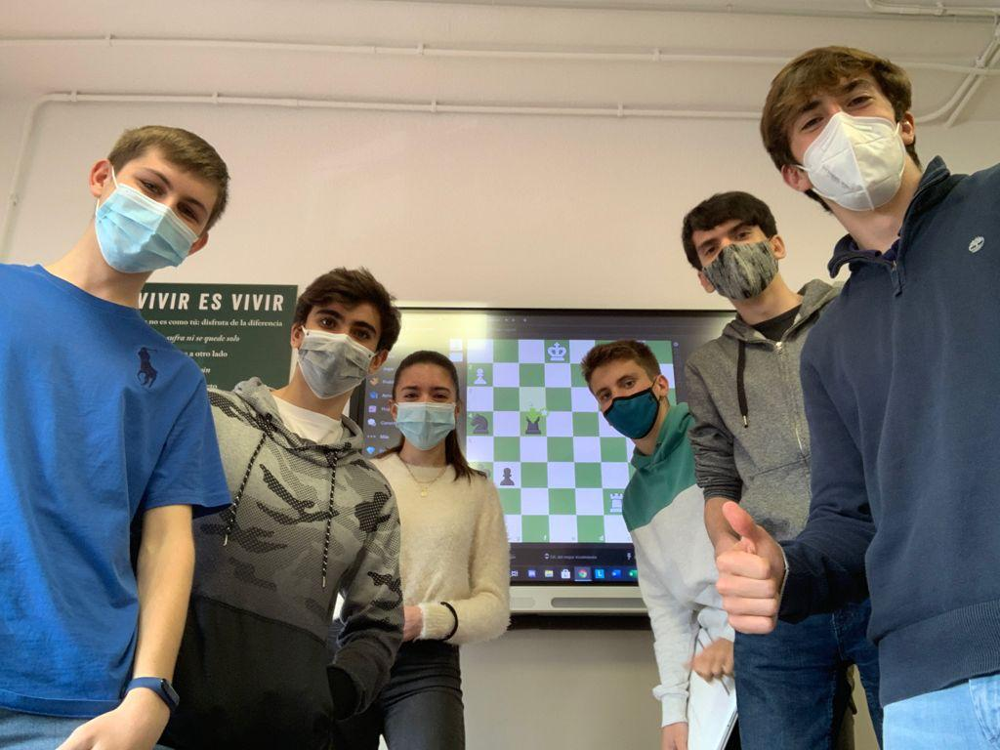
Primero dedicamos casi una hora en resolver puzzles de ajedrez, es decir, la máquina te propone una situación y tu tienes que encontrar las mejores
jugadas. En esto es donde más participé. Más tarde nos dedicamos a jugar partidas de ajedrez en Chess.com, pero el nivel era muy alto y yo más bien
aportaba poco, pero estuve allí todo el tiempo intentando observar y aprender.
Ya al final de esta evaluación he abandonado el ajedrez, he perdido la motivación y ahora ya no le dedico tiempo, pero me alegro de haberlo retomado
estos meses, ya que me ha abierto un nuevo mundo.
Este trimestre en el gimnasio ha sido claramente el más divertido y motivante. Ha habido tres cosas destacables en esta evaluación que han
conseguido mantenerme enganchado al gimnasio estas han sido las siguientes:
Primero nada más empezar este trimestre fui con Álvaro Riva al gimnasio a medir nuestros máximos y así poder comparar el progreso con el de
ahora. Sé que me iba a machacar ya que el es mucho más fuerte y grande, pero aún así iba a ser una experiencia entretenida y nueva, ya que
nunca antes había ido al gimnasio con un amigo. Decidimos hacer máximos de press de banca y de peso muerto. Empezamos con los pesos muertos,
poco a poco, así evitando una posible lesión, y cuando terminamos fuimos directos al press de banca pero nuestro error fue que ya estábamos
muy cansados y podríamos haber hecho más. De hecho una semana después hice 70 kg de press de banca. Ese día apunte esto: (El paréntesis
indica lo que creemos que podríamos haber conseguido pero o ya llevábamos mucho o simplemente no descansamos suficiente entre repeticiones)
La segunda experiencia fue ir con Ari, mi amiga, al gimnasio. Esta experiencia también la destaco porque me ayudó con la motivación. Lo
que hice ese día fue organizar un entrenamiento de 1h y media que me parecía interesante para ella ya que ella estaba empezando a ir al
gimnasio y no sabía qué hacer. Fue divertido porque a parte de ir al gimnasio que es algo que me gusta pude hacerlo con una amiga y ya
de paso obligarla a sufrir un poco, que creo que es siempre algo bueno.
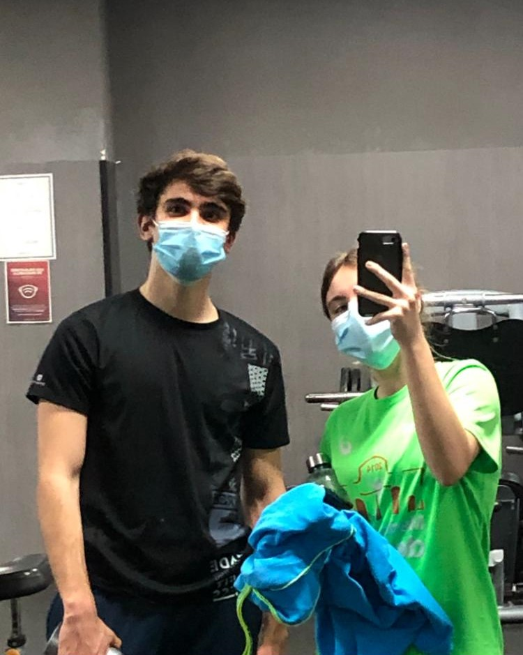
Finalmente, lo último que destaco de estos meses en los que he estado yendo entre 4 y 5 veces por semana es que ha empezado a venir gente
del colegio a mi gimnasio. Esto para mi es bastante bueno porque si alguien que conoces te pide ayuda por tu experiencia o simplemente
quiere ir contigo, eso te motiva mucho. Por ejemplo si un día no tenía pensado ir y me lo dicen, yo sin dudar voy.
Como conclusión pienso que este trimestre no he aprendido tanto acerca del gimnasio y ejercicios porque ya tengo suficiente experiencia
y aunque me queda por aprender, ya no tanto. He dejado de hacerme tablas porque ya no las necesito y sigo motivado, sigue siendo constante
y no creo que deje el gimnasio hasta dentro de mucho tiempo. Finalmente mis mejoras en los siguientes ejercicios compuestos esta evaluación
han sido los siguientes:
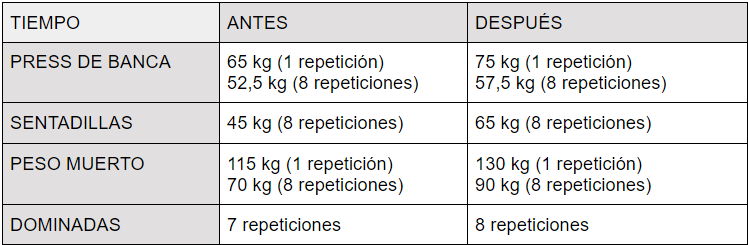
El viernes pasado durante las horas de CAS, las dos clases del IB realizamos una ruta por las montañas de detrás del colegio, realizamos
una ruta diferente a la ruta de la Presa de El Gasco, la cual más bien se dirigía hacia Torrelodones.
El principio fue exactamente igual que la otra ruta, salimos desde el fondo del patio de los niños pequeños y llegamos a una bifurcación,
esta vez tomamos la derecha, a partir de aquí era un camino distinto que yo no conocía. Para mi lo más destacable a parte del paisaje como
la última vez fueron las mansiones que vimos, a mi me parecieron increíbles.
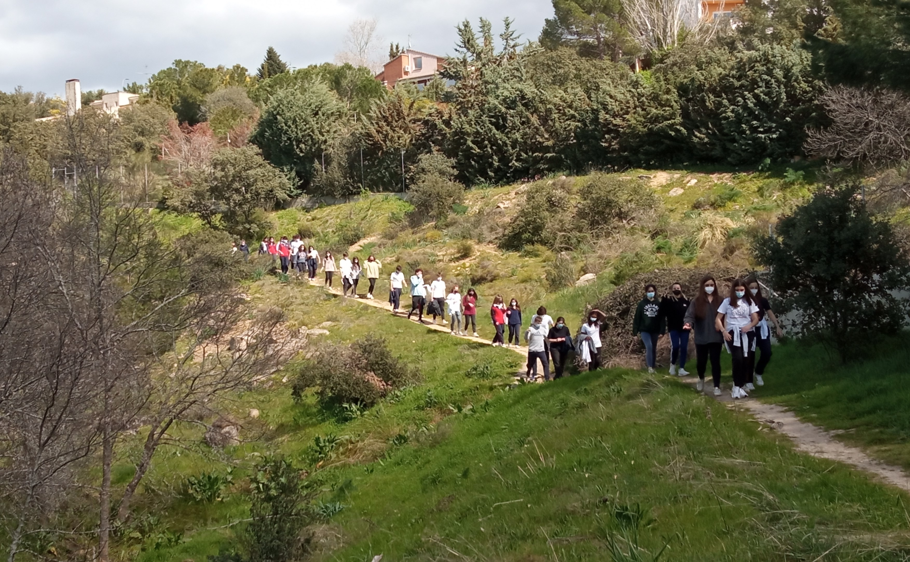
Mi actividad deportiva favorita no es el senderismo pero me gusta mucho apreciar las vistas. Sobre todo me gusta ubicarme, saber posicionarme
en un mapa, esto lo supe hacer por distintos puntos distinguibles desde lejos, como las pistas de tenis de al lado del polideportivo de
Navalcarbón, las cuales están cubiertas formando una cúpula con forma de bola de tenis enorme.
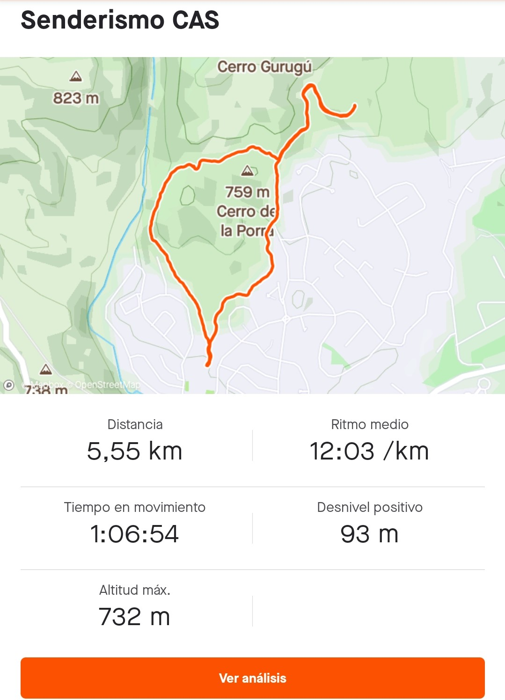
Justo antes de empezar la Semana Santa, cumpliendo todas las normas de seguridad del covid-19, me fui a Andorra a hacer Snowboard, uno de mis
deportes favoritos. Nunca antes había ido a Andorra y sinceramente aunque el viaje era de casi 7 horas, no se me hizo largo, ya que hacía mucho
tiempo que no viajaba, estaba más bien emocionado.
A lo largo de los 4 días me dedique a hacer snowboard unas 5-6 horas diarias. El snowboard es un deporte similar al ski, pero la principal
diferencia es que en vez de dos skis hay una sola tabla y estás posicionado lateralmente, es decir un pie delante y otro detrás, es como hacer
skateboard o incluso se podría decir que es parecido al surf.
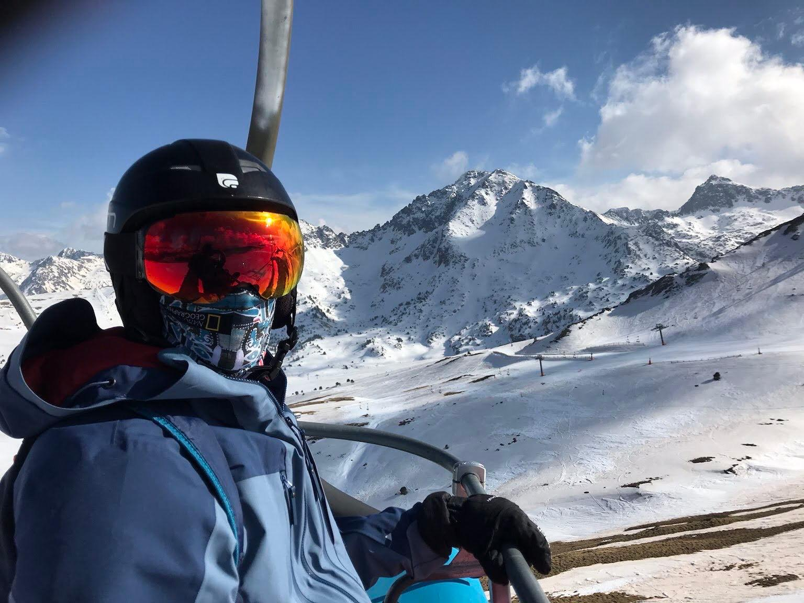
El snowboard es mi segundo deporte favorito, me gusta porque es un deporte distinto a cualquier otro, para empezar implica ir de viaje a algún
sitio, lo cual siempre es divertido así que ya asocio este deporte a algo bueno. También me gusta mucho por la adrenalina, cuando ya tienes
experiencia puedes bajar ciertas pistas más difíciles, el snowboard se convierte en un deporte muy divertido, vas muy rápido bajando una
colina, notando el viento, con muy buenas vistas, es increíble.
Yo he hecho ski muchas veces en mi vida, hace 4 años me cambié al snowboard y me encantó, es para mi claramente mejor que el ski, da más miedo,
lo cual es bueno cuando controlas y además es más difícil, por tanto es un reto personal, algo que siempre hace una actividad más interesante.
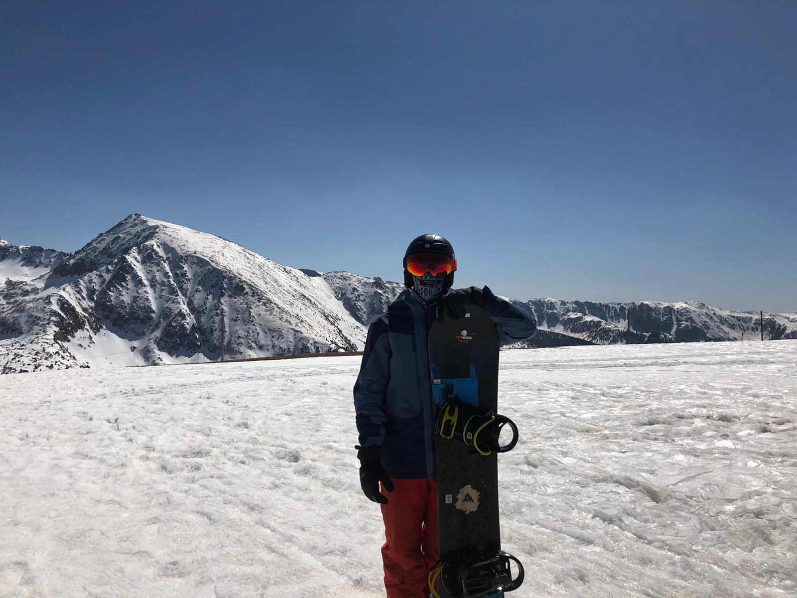
No todo es bueno, el equipamiento no es siempre cómodo así que se sufre un poco por dolor. También el snowboard es un deporte complejo y difícil
de aprender, además requiere estar en buena forma y por tanto hay días que puede que te salgan peor y días mejores. En resumen, pese a estos
inconvenientes, todas las vistas, notar la velocidad, todo merece la pena, y si uno puede permitírselo, aunque sea una vez por año, yo lo recomiendo.
Este trimestre he vuelto a retomar el tenis como actividad. El tenis es un deporte que siempre me ha gustado, tuve clases 3 años y recientemente
dejé las clases, pero el deporte no quiero abandonarlo, principalmente porque aparte de ser divertido, me gusta mantener mi nivel, no quiero
perder mi habilidad.
Esta vez, he hecho partidos 4 veces, las dos con Asier y Víctor. Todas las veces hacemos más o menos lo mismo, nos reunimos para jugar al tenis
porque es un buen plan con amigos. Primero comenzamos el juego con un rey de la pista, así calentamos, para más tarde jugar los partidos bien.
Para los partidos, echamos a suertes como van a ser, y jugamos a 2 puntos, mientras que uno descansa.
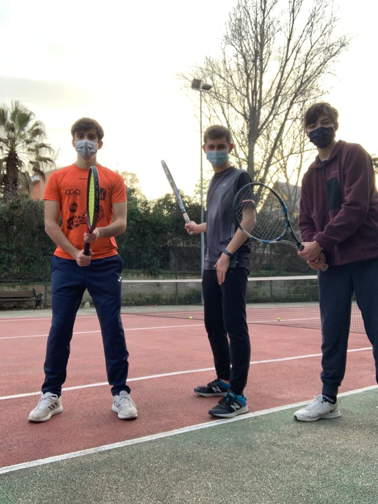
Normalmente ocurre algo bastante especial que es que hacemos un triple empate, es decir cada uno gana y pierde un partido. Es decir, esta actividad
es interesante porque notamos nuestras debilidades y hay una alta competitividad, ya que somos más o menos todos del mismo nivel.
Una anécdota a destacar es que Víctor que rompió las cuerdas de la raqueta al golpear una bola, no iba ni excesivamente rápido ni fuerte, simplemente
estaban ya desgastadas.
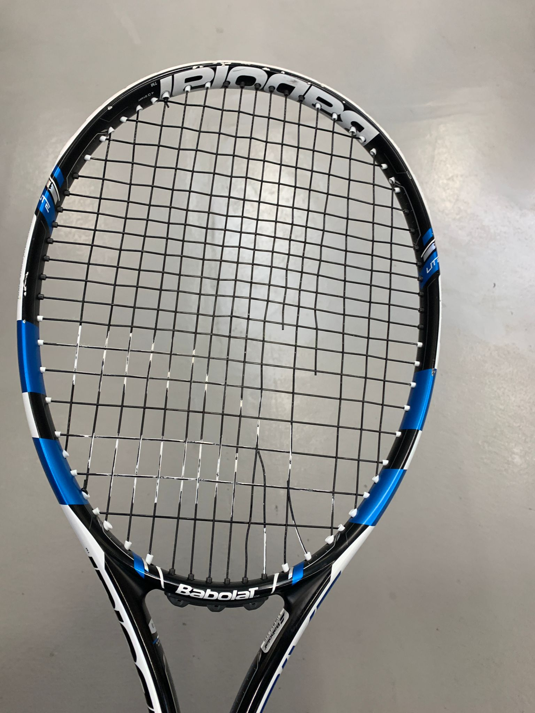
Finalmente, como conclusión puedo afirmar que voy a seguir jugando estos partidos mensuales ya que me ayudan a ser una persona más completa, voy con
amigos, tengo mi dosis de deporte y además hay competición, es decir esfuerzo.
El viernes pasado en la hora de CAS jugamos al flag otra vez. El flag es un deporte parecido al fútbol americano. Se juega en equipos, nosotros
lo jugamos 5 personas y lo jugamos con banderitas o trozos de tela que nos enganchamos a la cadera con un cinturón. Se divide en dos fases
la atacante y defensora, el objetivo al atacar es llegar al otro lado del campo y al defender el objetivo es impedirlo.
Mi equipo estaba formado por Finkel, Teresa, Lucía, Claudia y por mí. El flag es uno de los deportes que mejor se me da. Recuerdo que esta
vez no ganamos, mi equipo no tenía el mejor espíritu competitivo, pero estuvo muy divertido, intercepté como 3 balones y conseguí unos 4
touchdowns.
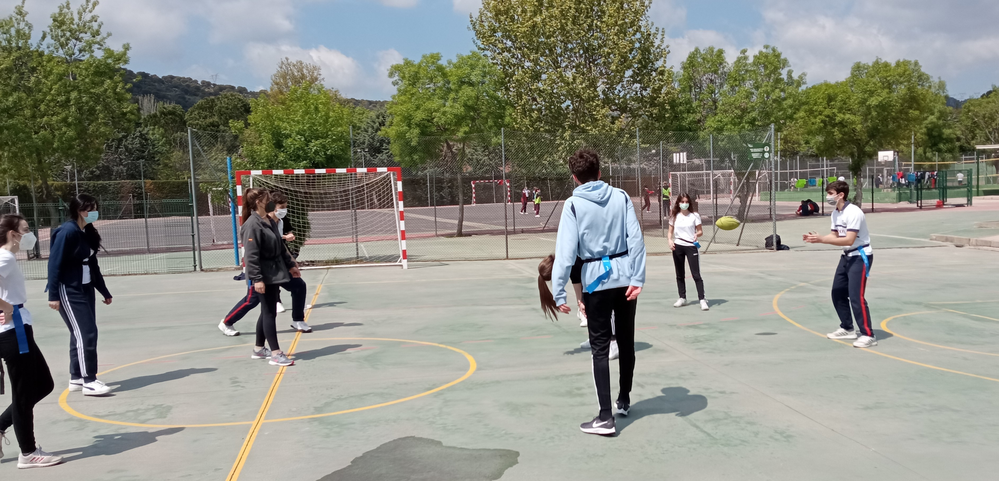 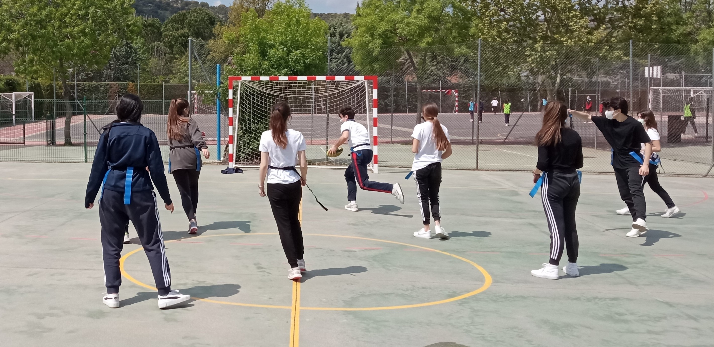
Esta evaluación, Álvaro Cameo junto a más personas han propuesto una actividad en la cual enseñamos y ayudamos a los alumnos de cuarto que no
están sacando tan buenas notas o simplemente están teniendo problemas. Yo estaba pensando ayudar con matemáticas antes de que me lo dijesen,
quería hacerlo con el “club de matemáticas”, pero se me adelantaron.
Como ya había bastantes profesores, y nos teníamos que organizar todos, me presenté para física, y como el año pasado Daniel Chen fue a mi clase
y le conozco personalmente, decidí específicamente enseñarle a él.
Primero como de verdad quiero ayudarle, le pregunté qué estaban haciendo en ese momento y qué llevaba mejor y peor. Comencé ayudando con teoría
ya que su debilidad es la falta de conocimiento del idioma. Mi alumno llegó a España hace ya casi 2 años, pero aún así saber palabras complicadas,
especificas de cada materia es algo que aún le falta por aprender. Dediqué dos clases solo a esto, parece mucho pero en el fondo me falta tiempo,
siempre me paso de la hora y llego tarde al comedor, pero al menos me quedo a gusto. El resto de clases han sido más prácticas enfocadas a la
resolución de problemas.
A él le falta la base, y yo me centro en ayudarle con eso principalmente. Lo hago por ejemplo forzándole a leer el enunciado de cada problema
entero, escribiendo todos los datos con las unidades correctas y también le recuerdo que tiene que escribir todas las fórmulas. En el fondo
Dani es muy listo, resuelve los problemas sin fórmulas, yo estoy ahí porque al tener una relación estrecha con él, puedo explicarle todo mejor,
le entiendo mejor que un profesor ya que me puedo posicionar perfectamente en su situación.
Daniel Chen ha mejorado en muchos aspectos, creo que mis clases son una pequeña ayuda, al menos con ellas aprueba y me gusta ayudarle. Además
atiende a todas mis clases, a diferencia de las normales. Así que creo que le he dado la carrerilla suficiente para que vuelva al nivel de su
clase incluso sin mí, y sinceramente viendo que su nivel solo con mis clases creo que puede pasar de sacar cuatros a sacar sietes o más.
El miércoles pasado se propuso una iniciativa acerca de la igualdad, enfocada para los niños pequeños, ya que la siguiente semana era el 8M.
Me escogieron como participante, ya que creyeron que lo haría bien.
Entonces el 8 de marzo, con mi compañera Annie, fuimos a la clase de 5ºB. Entonces yo presenté a la clase la presentación que teníamos, se
mostraban los estereotipos de trabajos, y los cambiamos para ver como reaccionaban. Para hacerlo entretenido y dinámico para los niños
pequeños les dijimos que los chicos tenían que posar como modelos y las chicas dibujarlos.
A los chicos les daba mucha vergüenza pero Annie y yo intentamos ser muy cercanos y les ayudamos, para perder la vergüenza les dijimos que
era como un juego, que se saltaban clase y que era un concurso. Annie fue ayudando a los grupos chica-chico individualmente y yo lo
supervisaba un poco menos, porque como había una chica confinada, me dediqué a ser su pareja, yo hice de modelo y ella me dibujaba,
porque vi que estaba sola y me dio pena.
Al final de la clase hicimos una votación y seleccionamos 3 ganadores. Algunos chicos estuvieron tristes por perder, pero para contentarlos
les dije que al menos habían perdido clase y se alegraron. El único problema es que no pudimos sacar fotos a los dibujos, la hora se había
acabado y me tenía que ir rápido, cuando volví la profesora no encontraba los dibujos. Pero justo hoy, jueves ha encontrado los dibujos y aquí
enseño dos de ellos.
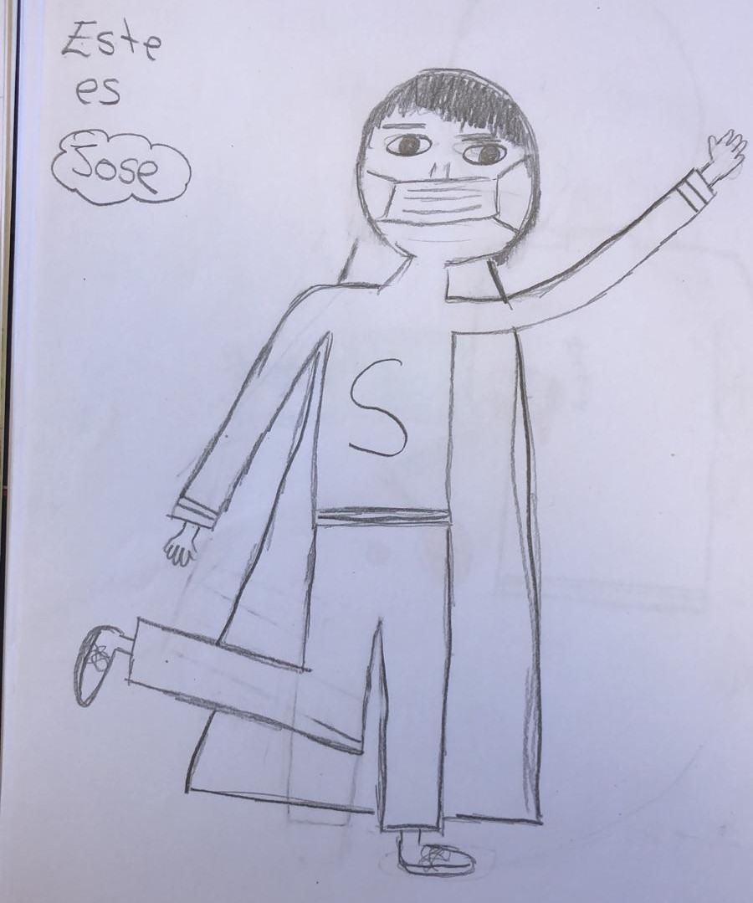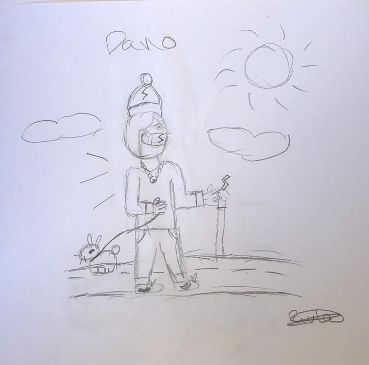
El viernes pasado, la última hora de clase, la cual tenemos libre, la dedicamos a recoger basura alrededor del colegio. fuimos
Álvaro Riva, Víctor Baeza y yo. El día anterior cogimos 6 guantes y varias bolsas de basura para ya ir preparados. Ya lo habíamos
hecho una vez antes, durante la primera evaluación, así que fuimos directos a la zona más sucia.
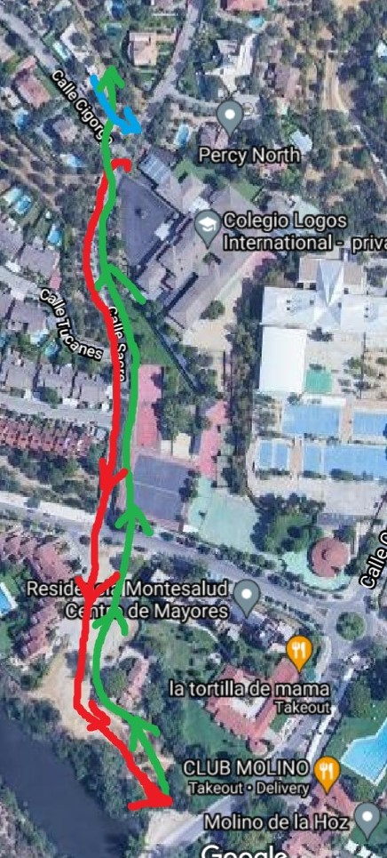
Salimos del colegio por la entrada de arriba y bajamos toda la calle casi hasta el parking de arena de al lado del lago. Ahí nos encontramos
con un gran inconveniente, de repente, al pasar por allí nos llegó un olor horrible. Aún no sabemos qué es, pero creemos que era abono, entonces
decidimos dar media vuelta. Subimos toda la calle, esta vez por el pequeño bosque de al lado, recogiendo basura por el camino, pero esta vez
subimos más arriba.
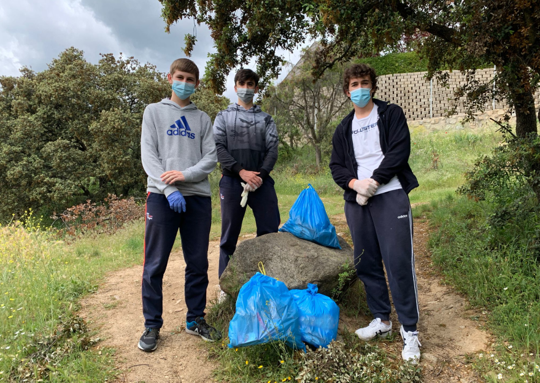
Seguimos recogiendo basura los últimos 20 minutos por esta zona y ya, finalmente nos sacamos la foto al terminar la tercera bolsa de basura,
ya que quedaba poco para que se fueran las rutas. Luego tiramos los guantes y las basuras en los contenedores de fuera del colegio y ya nos
fuimos a casa.
24/07:
Desde que acabó la tercera evaluación en mayo, yo me uní a un proyecto que dirigían Álvaro Cameo y Jaime Acosa para hacerlo con ellos. El proyecto
era montar un go-kart que funcionaba con energía producida por una oxidación que hacían bacterias y plantas. Ahora mismo diría que todos hacemos
lo mismo y estamos al mismo nivel de cargo en el proyecto, aunque Jaime es el más motivado.
Nos quedamos 3 miércoles por la tarde para estar en el laboratorio y crear esta “batería”. El primer día fue de organización y de pedir ayuda a Elena,
ya que es todo química y nos queríamos apoyar en un trabajo que hizo una alumna pasada del colegio. El primer día apuntamos todo lo necesario para
montarlo. El siguiente día fuimos al campo a por una planta, la metimos en una botella de agua que cortamos y pusimos dentro tierra con nutrientes
y agua. Montamos parte del sistema de botellas y cámaras y dejamos la planta cerca de la ventana para que le diera el sol.
Finalmente, probamos el sistema pero no dio voltaje por tanto pensamos que habíamos fracasado, pero era porque no supimos utilizar el voltímetro.
Pero cuando volvimos dos semanas después, la planta estaba prácticamente muerta, nuestras teorías son que o el verano no lo soportan bien (porque
las otras del campo también estaban muy mal) o que unos pulgones mataron a la planta, ya que estaba llena de estos. Decidimos atrasar esta parte
del proyecto, y hacerlo bien en septiembre, comprando maceta y planta. Si vuelve a fallar siempre se puede comprar una batería.
Entonces decidimos que para empezar había que montar parte del chasis del kart, empezamos comprando en el Leroy Merlín tubos de PVC de 2 metros
y varios conectores para unir estos tubos. Fuimos a casa de Jaime (estamos construyendo el kart en su garaje) y montamos el chasis serrando tubos
y uniéndolos.

El día siguiente fue uno largo, primero fuimos al punto limpio de Majadahonda donde preguntamos si tenían ruedas usadas de carretilla, pero no
encontramos nada, vimos un par de vídeos de como montar un sistema de viraje para un kart, pero era todo muy caro, y el objetivo del kart era
hacerlo todo nosotros al menor coste posible, la estética y potencia no era el objetivo. Y como ese día no teníamos nada más que hacer, fuimos al
Leroy Merlin para comparar tubos y precios, y también para ver si había ruedas y tubos que conectasen bien. No compramos nada, pero fue útil el
tiempo invertido.
El 9 de julio fuimos a casa de Jaime, ahí editamos el chasis inicial, y pensamos cómo crear un sistema de viraje barato. Después de muchas ideas,
creamos un sistema muy simple con tubos de PVC más finos para crear un volante, pero acabó siendo uno más bien parecido al de la bici, movimiento para
delante y atrás, no rota sobre un eje una rueda. Fuimos al Leroy Merlin de Majadahonda otra vez y compramos tubos, enganches y ruedas para el kart.
Volvimos a casa de Jaime para montar lo comprado, y después sorprendentemente funcionó. Como vimos que funcionaba, después de unos retoques, decidimos
pegar con un pegamento especial para tubos de PVC los enganches que no se iban a modificar. Estábamos a punto de conseguir que las ruedas de delante
giraran y que el kart se pudiera mover para delante si levantábamos la parte de atrás pero hubo un problema, había demasiada flexión en el tubo que
unía las ruedas delanteras. Para arreglar esto apuntamos que para el próximo día íbamos a necesitar unos enganches que meteríamos al cortar el tubo
en varias partes, cuantos más trozos de menor longitud, menos se dobla.
29/07:
Ayer probablemente fue el último día que vamos a poder montar el kart hasta septiembre, porque no volvemos a coincidir los 3 en todo el verano. Ayer
lo que hicimos fue dedicarnos a la parte de atrás del kart. Primero fuimos a comprar lo que necesitabamos otra vez en el Leroy Merlín y volvimos a
casa de Jaime para construirlo. Terminamos lo del día anterior que quedaba pendiente (utilizar enganches para evitar la flexión), pero no funcionó,
no era suficiente, así que vamos a comprar un barra fina de metal para meterla dentro del tubo. Después montamos las ruedas de atrás, sin ponerle
motor ni tracción aún, y ruedan perfectamente. Pero nos encontramos con un problema grande, las ruedas de delante rozaban demasiado al girar, así
que hicimos dos ranuras en dos tubos de esta forma:
Tardamos muchísimo ya que no tenemos las mejores herramientas (usamos taladros, sierra no mecánica y lija). Pero lo conseguimos. Ahora nos falta el
motor, los frenos, la base del kart (colocar y unir varias planchas de madera que tenemos) y comprar esa barra de metal.
Después de todo me alegro mucho de formar parte de este proyecto, aunque no funcione al final es una muy buena experiencia. Quiero estudiar ingeniería
y esto es un buen primer paso. Hay también momentos no tan entretenidos, no se aprecia el tiempo de viajes en autobús de un lugar a otro, al final
son muchas horas. Dedicamos la mayoría del tiempo en planear todo y al final poco en construir, pero merece la pena. Finalmente para mí, lo mejor
es cuando estamos buscando soluciones a un problema que nos encontramos, por ejemplo, el primer problema fue el volante, y como evitar rozamiento
entre tubos que frene la rueda, lo conseguimos al final y fue muy satisfactorio, otros problemas aun no los hemos resuelto, y otros al final son
una pérdida de tiempo, intentamos fabricar una pieza serrando tubos para evitar esa flexión del tubo de las ruedas delanteras y no conseguimos
nada. Pero al final aunque no funcione es todo muy divertido, sobre todo porque es en equipo, y todos trabajamos y pensamos ideas por igual.
6/09:
Durante los últimos días he terminado de redactar todo y ahora es el momento de actualizar la página web.
Primero he añadido el contenido del verano, excepto servicio, de la misma manera que hice el resto de evaluaciones, solo he tenido un problemilla con
las imágenes, pero lo arreglo durante estos días. Después he arreglado un par de errores de la página web: la página no se adaptaba bien a otros tipos
de pantallas (menos o más pulgadas que la mía) y al hacer click en una actividad en el índice, la parte superior de la página que te permite volver
arriba con un click tapaba el título de la actividad.
El primero fue muy sencillo, en cambio el segundo me llevó bastante tiempo. Acabé llamando a mi hermano para que me ayudase a programarlo, ya que él
está estudiando la carrera de ciencia del software. Tardamos un poco pero lo conseguimos al final después de varios intentos y búsquedas en google.
Al final este verano no he programado tanto como en otros trimestres, pero este próximo trimestre tengo pensado mejorar la estructura de la página
usando más capas con más colores, por ejemplo cada actividad estar enmarcada por un rectángulo y creo que eso facilitará el uso de mi web.
22/07:
Por ahora he ido al gimnasio unas 4 horas por semana, todas las semanas, ya que por COVID no he viajado tanto como otros años. Mi objetivo es hacer
6 horas por semana, pero he tenido que estudiar para un examen y no he podido tanto. Pero ahora voy a continuar bien.
Al principio del verano mi objetivo era poder hacerme uno o más “muscle ups” un ejercicio complicado que es una dominada explosiva con la que llegas a
ponerte encima de la barra para hacer un fondo. Por ahora no lo he conseguido, pero practico con gomas que te ayudan a subir. Mi segundo objetivo es
llegar a 150 kg de peso muerto lo cual a mi me sigue sorprendiendo porque si vuelvo a cuando hable del gimnasio en la primera evaluación dije que podía
hacer de máximo 80 kg.
Ponerse objetivos siempre es bueno porque cuando los consigues es muy motivante, ahí es cuando ves el progreso. Pero a veces también hay escalones que
cuesta mucho superar, por ejemplo llevo estancado en 60 kg 5 repeticiones de press de banca durante 3 meses. No lo consigo superar así que he pasado a
hacer otros ejercicios que probablemente me ayuden a superarlo. Pero hay otros que si he superado por ejemplo al hacer biceps me quedé durante meses
en 7,5 kg por brazo ahora ya por fin lo he subido a 10 kg y poco a poco mejoro.

Para evitar estos escalones, y como es sano en general, estoy empezando a añadir estiramientos por las mañanas, principalmente para aumentar mi movilidad
de hombros que veo que es reducida, y para volverme más “simétrico”, puedo girar más una muñeca que otra.
Finalmente sigo estando motivado con el gimnasio y creo que va a ser una actividad que me dure varios años más con suerte. También está bien que mi hermano me
empuje todos los días y yo a él. Así mejoras más, por muy tonto que parezca. Que él me pregunte: ¿vienes hoy al gimnasio? hace que vaya, a lo mejor ese día me
daba pereza pero voy, si no a lo mejor me lo saltaba.
29/08:
Mi hermano ya se ha ido de vuelta a la universidad lo cual me ha desmotivado un poco, un compañero de gimnasio motiva mucho, pero sigo yendo al gimnasio, y ya
cumplo bien la dieta. También mis amigos han vuelto al gimnasio después del verano y eso está bien. Finalmente, gracias a cumplir la dieta bien, claramente
se notan muchos avances.
Hace un año empecé a ir al gimnasio, el tiempo se me ha pasado como si nada, y ya el gimnasio es mi rutina. He decidido comparar resultados en este momento
y la verdad que me han sorprendido bastante. Empecé muy flaco con un porcentaje de grasa bajísimo, 55kg 10% de grasa corporal, ahora después de solo un año
peso 71 kg y tengo un 15% de grasa corporal. Se podría decir que he ganado 11 kilogramos de músculo porque no he ganado prácticamente altura. Claramente he
mejorado y esta marca de llevar un año me sorprende hasta a mí.
29/08:
Este verano he jugado ya 5 veces al baloncesto, no es mi deporte favorito pero voy mejorando y cada vez me gusta más. Lo juego principalmente porque un
amigo mío tiene una pista de baloncesto en su urbanización, y al final es un buen plan para un día de verano jugar al baloncesto con amigos y después de
sudar por el calor, bañarte en la piscina.
Solemos ser entre 4 y 7, por lo que no podemos jugar partidos de verdad, pero hacemos partidos de 3 contra 3, partidos de una sola canasta, jugamos al 21
y hacemos tiros libres. Para calentar hablamos un rato mientras que tiramos cada uno una vez desde donde queramos. Luego nos dividimos por equipos más
o menos nivelados y solemos echar un partido de campo completo aunque sea 3 contra 3. Cuando nos cansamos descansamos un rato y jugamos en solo medio
campo (para mí este modo de juego es el más útil porque así practico todo: tiros, regates, correr botando y pases).

Cuando alguno se cansa como somos pocos jugamos al 21, un juego que consiste en tirar a encestar el máximo número de veces que puedas, pero solo puedes
tirar respetando el orden. Empieza uno desde la línea de tiro libre y si consigue meterla gana 2 puntos y vuelve a tirar desde la línea de tiro libre,
si acierta gana un punto y repite, si falla el siguiente tiene que cogerla y desde donde caiga, tirar, por tanto, el objetivo es cogerla lo más rápido
posible. Si la metes ganas 2 puntos y tiras desde la línea de tiro libre, si no le toca al siguiente, y así sucesivamente. Si tiras desde la línea de triple
vale 3 puntos. El objetivo es llegar a 21 puntos, si te pasas vuelves a 0, si lo consigues ganas.
Yo creo que he mejorado aunque solo hayamos jugado unas 8 horas. Y cada vez es un deporte que me gusta más, el único problema es que no soy bueno comparado
con el resto, así que tengo que practicar más.
05/07:
Ayer jugué al tenis con Víctor y con Asier otra vez. Jugamos al tenis todos los trimestres ya que este año Víctor y yo lo hemos dejado porque hemos escogido
otras actividades pero queremos mantener nuestro nivel.
Empezamos calentando jugando a un rey de la pista, con el objetivo de recordar un poco como darle derechas y reveses. Vamos aumentando poco a poco la fuerza
y al final cuando todos nos sentimos cómodos (cuando podemos controlar la dirección de la bola y cuando podemos mandarla a la esquina con una fuerza razonable
y un ángulo pequeño) pasamos a jugar partidos.

Echamos a suertes como serán los partidos, esta vez fueron así: Víctor-David, Víctor-Asier y el último Asier-David. El partido entre Víctor y yo estuvo todo el
tiempo apuntando a que ganaría yo, ya que el primer juego lo gané por bastante, en cambio, el segundo estuvo muy reñido, el problema que tenemos Víctor y
yo es que cuando vemos que es posible perder, dejamos de darle con fuerza y jugamos asegurado por tanto ninguno gana la diferencia de dos. Finalmente gané yo 2-0.
Luego fueron Asier y Víctor, Asier suele ser muy bueno en saques pero esta vez no, esta vez fue Víctor. Acabaron 2-1 para Víctor. El partido final fue entre Asier
y yo, suelo perder contra Asier pero ese día no se sentía bien con los saques. Al final gané por bastante, 2-0.
Ese día gané yo, espero mantener el ritmo en los siguientes partidos. Se puede notar como al hacerte mayor ganas fuerza y coordinación, y los deportes se van
haciendo más sencillos, generalmente. Aún conozco mis debilidades, principalmente mi revés, así que mi plan es que cuando volvamos a jugar, al menos el calentamiento,
lo jugaré solo de revés.
22/07:
El viernes pasado jugué al fútbol con amigos. Es el deporte que probablemente más les guste a la mayoría. Pero para mí es probablemente el que peor se me da.
No soy el peor, pero me siento muy “ortopédico” al jugar ya que no me siento cómodo al correr con la pelota en los pies, por poco casi que me tropiezo al jugar.
Primero jugamos a un rápido, básicamente un juego en el que se tira a la portería desde medio campo, el portero la intenta parar, pero solo puede empezar desde
la línea del área. Si falla el que tira, o el portero se la para, él tiene que correr al área para ser portero, y así sucesivamente. Cuando uno mete, el que no la
ha parado queda eliminado. Poco a poco iba ganando puntería pero aún así la mitad de mis tiros no iban ni cerca de la portería.

Luego jugamos un partido durante 1h. Como éramos pocos, lo nivelamos para jugar 2 contra 3. Yo iba con Álvaro Cameo contra Jaime Acosa, Jaime Mateos y Sergio Robles.
Aquí es cuando empecé a notar mejoría, poco a poco me sentía más cómodo, incluso metí una desde medio campo bastante buena por la escuadra. Como éramos tan pocos
fue un partido que me cansó muchísimo pero mereció la pena porque ganamos 2 contra 3.
Terminamos volviendo a jugar un rápido como un descanso, y luego como hacía tanto calor nos refrescamos en la piscina. Lo que he notado es que a pesar de no ser
el mejor al esforzarme en mejorar poco a poco juego mejor y al final veo que tanta variedad de deportes me hace mejorar en general. Ahora mi objetivo es aprender
a controlar el balón corriendo y mejorar la puntería sin tener que darle fuerte.
10/07:
Los días que he jugado al baloncesto también he jugado al ping pong para descansar, pero pasarmelo bien durante el descanso. Suelo jugar, sin esforzarme mucho,
un rey de la pista contra mis amigos. El ping pong si que se me da bien, he jugado todos los veranos de mi vida prácticamente y al final se nota.
También hacemos partidos y el más reñido suele estar entre Jaime Acosa y yo, pero depende mucho del día que esté teniendo cada uno.

Un día, cuando nos cansamos de montar el kart (creatividad 1), jugamos al ping pong. Y estos partidos sí que fueron competitivos, nos pasamos 1 hora y media
seguida ese día. Al principio ganaba Álvaro todo el tiempo, los primeros partidos si no recuerdo mal fueron Álvaro-yo 21-18 y Álvaro-Jaime 21-17. Luego
empezamos a calentar y poco a poco mejoramos, principalmente Jaime y yo. Jaime me ganó el siguiente partido 21-18. Pero yo me notaba mejor, yo soy el mejor
cuando voy atacando, le doy rápido y con fuerza varias veces hasta que es prácticamente imposible acertar. Mi debilidad es el revés. Álvaro es constante y
Jaime saca muy bien.
Después llegué a mi pico, Álvaro me ganó 26-24, es decir estuvo súper reñido, y al final ganó él. Luego a Jaime le gané 21-17. Para terminar jugamos un rey
de la pista, cada uno tuvo su momento de aguantar 8 veces o así seguidas sin ser ganado. Al final el ping pong es un buen deporte, no cansa mucho y además
es muy rápido, por lo que es entretenido aunque no juegues.
29/08:
He vuelto a jugar al ping pong y la verdad es que jugar este verano de manera competitiva me ha hecho mejorar, hoy solo he jugado contra 2 amigos pero he
jugado muy bien. No ha habido nada especial a resaltar esta vez, ha sido parecido a las otras veces, simplemente mi reto esta vez era ser muy constante y
no jugar siempre a darle fuerte, y me ha funcionado muy bien la verdad.